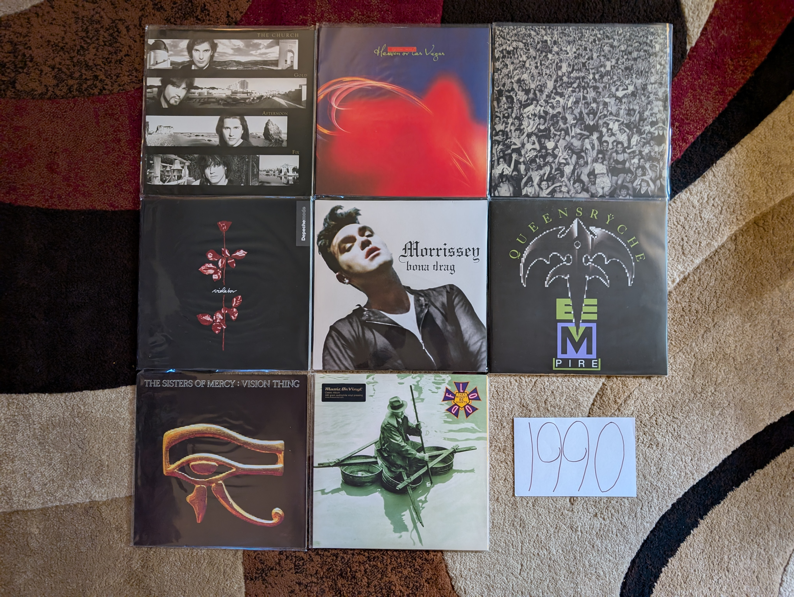
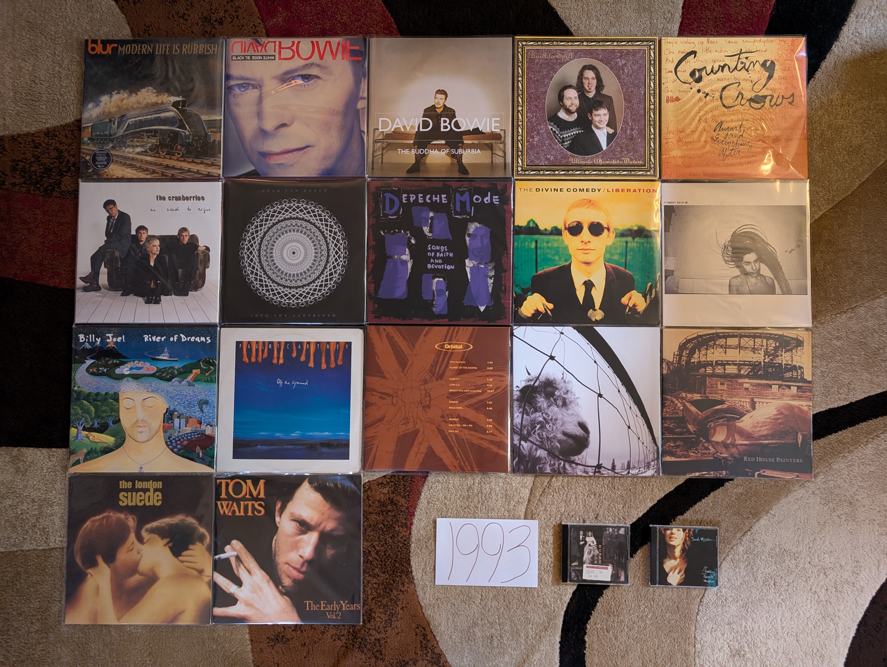

1990s¶

1990s Overview¶
Maybe the most diverse and unique decade I will catalog in this project. When it started, the prevailing trends were mostly a carryover of the dominant sounds of the 80s. Then grunge and the alternative rock movement took hold. The influences of world music and multiculturalism were undeniable. Rap/Hip-hop emerged from the underground and became the dominant cultural force. Then it morphed with R&B and Rock to create new genres that would spawn the most popular groups of the later half of the decade. Throughout all the trends, women were increasingly taking the lead in driving trends and record sales. It was an exciting and positive time, yet in many ways it was the end of the world as we knew it. By the end of the decade, the music industry would be transformed by a series of technological developments and we would never consume music the same way again.
These were my teenage years, and like any good teenager, I was a music obsessive. I spent the early years very much looking backward into the artists of the classic rock period. As things continued, I became very wrapped up in the diverse sounds of the age. There was a lot going on over the course of these ten years and this section took a long time to write. It was an enjoyable and nostalgic journey, and I’m glad I could write these memories down while I can still recall them clearly.
1990s Stats/Favorites¶
Section started: 2 January 2023
Section complete: 26 May 2025
Latest update: 26 May 2025
Total Albums: 151
Top Artists:
5 albums (6) - Tori Amos, The Divine Comedy, PJ Harvey, Pavement, Pearl Jam, R.E.M.,
4 albums (2) - David Bowie, Stone Temple Pilots
Favorite album:
Also my favorite album of all time:
Spiderland by Slint
{kind=link}
Favorite Song:
“Iieee” by Tori Amos
Is the title of this song “No” in Japanese? I’m not sure, but this might just be the most outstanding piece of art-rock by an musician who has made a lot of pretty outstanding art-rock.
1990¶
The first year of the 90s almost feels like an alternate potential future for pop music. While most of these albums are a natural extension of the 80s sounds, you can sense that the artists wanted to go to a bigger, new place for the new decade. That said, we aren’t really seeing the roots of what would actually be the predominant trends of the decade. So to me, 1990 is almost like an extreme version of the 80s that hints at a different direction that pop could have gone. Maybe my perception is colored by the list of artists that made my my favorite work from the year. Each one of these musicians/groups rose to fame in the 80s and is transitioning into the new decade, in most cases with an obvious attempt to modernize or revitalize their sound. The only one of these records I heard at the time would have been the George Michael album. I was not a fan back then.
{kind=link}
Gold Afternoon Fix by The Church - After the breakout success of Starfish they comfortably retreat back into cult-indie status in the new decade. There are very few bands who have hovered under the radar for decades more successfully than these guys. Not quite goth, not quite psychedelic music, they are a genre unto themselves. It starts to sound a little too samey to me on the albums after this, and this is their last compelling full album statement for me. [Memory: Like so many people, I found these guys via the film Donnie Darko. Unlike most people, I started my journey here, because it was what I could buy on eMusic for a couple bucks.]
Heaven or Las Vegas by Cocteau Twins - 4AD would start to morph into something else after the 80s wrapped, but we get one more record in the classic sound of that massively influential label. This is quite a bit brighter and slightly more accessible that their 80s work, but this is still the kind of atmospheric, inventive dream pop these guys had been making since the late 70s. This is one of those cases where a group was destroyed by their eventually mainstream acceptance. In many ways, so was the label they were signed to. [Memory: It always confused me how difficult it was to buy a vinyl copy of this since it was successful in the era when people were still buying that format. Their much more obscure early records were far more widespread in both original and reissue form.]
Violator by Depeche Mode - Their massive hit, and for most people, their definitive album. It adds a harder industrial edge to their existing synthpop formula. It does feel like a blueprint for how an 80s electronic band could transition to the brave new world of the 90s. Martin Gore doesn’t get enough credit for how good he is at writing ballads, and “Waiting for the Night” is one of his greatest works. [Memory: I was so into these guys in the late 90s MP3 era. I probably downloaded most of this record off of Napster back in the day. I don’t think I actually bought at copy until maybe 2010.]
Listen Without Prejudice Vol. 1 by George Michael - [1991 FAVORITE] - This is such a brave departure, but it also manages to summarize the essential qualities that made him a global pop superstar. At the time, I don’t know that it was understood how central he was to the production of his solo work, but this is a unique and spectacular recording. There is such a warm, intimate sound here. The ballads like “Praying for Time”, “Cowboys and Angels”, and “Mothers Pride” are probably the best work he ever put to record. The lead single “Freedom! ‘90” is one of the songs that created the 90s. [Memory: My opinion of this album has changed remarkably over my lifetime. I remember when my sister bought it back then, I couldn’t stand it. Every time that video for “Freedom” came on VH1, I changed the channel. By around 2007 I was digging that single. By 2014 it was one of my favorite albums of all time. By the time he passed in 2016, I fully understood and mourned the genius that we had lost.]
Bona Drag by Morrissey - In both his time with The Smiths and in his solo career, there have been a preponderance of compilations. This collection of early singles from his solo work is perhaps the most essential. It feels like most of his finest moments from the first few years were littered among a collection of singles and EPs. You could almost live with The Best of Morrissey but then you wouldn’t have the outstanding “Piccadilly Palare” and the essential “Will Never Marry”. [Memory: This was the compilation that made me change my mind about including that kind of release on this list. So many of my favorite songs would be left out in the cold if I didn’t include this record.]
Empire by Queensryche - The pixelated logo on the front of the record almost feels like a visual analogy for a quintessentially 80s metal band consciously updating their sound for the new decade. It is a mostly successful refresh that adds some electronics and slick production to create something that is clearly trying to be a bit futuristic. They would never really recover from loosing the edge they had on the earlier albums, and this is guilty of trying to be a little too Pink Floyd at times. That said, their commercial peak is a largely successful work that does a great job mixing radio friendly power ballads with their trademark prog tendencies and complex guitar solos. [Memory: I remember hearing “Silent Lucidity” on the radio, driving home from class at the Penn State Berks campus. That ballad is a poor representation of their work at large, but it would be my point of entry to their outstanding catalog.]
Vision Thing by Sisters of Mercy - The brevity of their recorded output has greatly enhanced their profile. Each of the three records is a a big shift in scope and sound. This must have sounded incredibly fresh and exciting at the time, and it really foreshadows the various electronic goth acts that would emerge in the decade to come. I wish there were more albums, to see where this was all leading, but maybe it saved us from the inevitable decline. [Memory: I knew almost nothing about this record when I bought a MoFi reissue of it for cheap. I was a massive fan of the first two, much more punk rooted albums, and had heard very mixed reviews of this more electronic affair. I loved it immediately.]
Flood by They Might be Giants - A transitionary work between their early novelty song days, and the pop eclecticism that continues to our current day. Jokey pop gem “Particle Man” would have fit right in on either of the first two records. “Birdhouse in Your Soul”, perfectly balances their early and later sound, and is one of the greatest pop songs ever written. Tracks like “Sapphire Bullets of Pure Love” give the first indication of the experimental pop we would see increasingly as their career developed. [Memory: Around 2010, YouTube was starting to become a massive repository of historical footage and a profound source of nostalgia. One of the early videos I remember watching, was a video of the group playing “Birdhouse” on the Carson show with the Doc Severenson band (Doc played a blistering trumpet solo in the bridge). It is still posted up there, and I’m glad that I can go back any time i want and relive this very early 90s moment.]
1991¶
This will always been remembered as the year of grunge, and the first real shots fired for the sounds of the new decade. With the exception of the debut by Pearl Jam, my interest lie in different territory. I certainly remember the video for “Smells Like Teen Spirit” constantly playing on MTV, but it didn’t resonate with me then, and today I feel that it is a touch overrated because of Kurt Cobain’s untimely death.
I was an elementary school student in 1991 who wasn’t really listening to the music of the day. I was definitely a fan of the singles off of the R.E.M. record and I believe that one of my siblings had a copy of that not long after release. I definitely was very into the singles from the Genesis release, but I wouldn’t hear the full album until I was in my mid 20s! It is strange to think how different things were back in the era of physical media, when you couldn’t instantly stream anything that interested you. Outside of the three artists mentioned above, I can confidently say that I didn’t hear any of these other records until the next millennium.

Everclear by American Music Club - I have never listened any of the other work by Mark Eitzel, but I really enjoy this mellow collection of sad rock songs. I have to be in a certain mood to listen to something this slow and dreary, but it is the finest work in this kind of genre. [Memory: I came to this record via an exploration of the largely imaginary genre of “Slowcore”. Very early in my vinyl collecting hobby I came across a LP of this that I decided to pick up. I’m glad I did, as I have never seen it again since.]
Woodface by Crowded House - These guys just make stunning pop songs. Every time I put this record on, I am always shocked by how great these tracks are. All their albums are worth listening to, but somehow this one is the best summary of what makes them great, such that I don’t need the others? The one-two punch of “Four Seasons In One Day” and “There Goes God” is made up of two of my all time favorite songs. I really like Split Enz keeps popping out in songs like ” Fame Is”. [Memory: around 2007 I became interested in artists that were massively popular in other parts of the world, but less known in the USA. While they are perceived as a one hit wonder here, they are international superstars. While working through their catalog, this was always the record that spoke to me the most.]
We Can’t Dance by Genesis - This was the perfect end for this legendary band, and I don’t know why they had to ruin things and release a sub-par record with a different singer after this. We have the atmospheric pop-rock of the 80s Genesis in songs like “No Son of Mine” and “Way of The World”. We have sugary ballads that could have been solo Phil Collins gems like “Tell Me Why” and “Hold on My Heart”. They once again reinvented themselves with a pair of novelty tunes with videos that would run constantly on TV in “Jesus He Knows Me” and especially “I Can’t Dance”. We even got two prog epics to aknowlege where they started out. The historical drama of “Driving the Last Spike” is an underrated gem that combines the prog bombast with the gentle beauty of the Collins solo works. Then the slow build and closing grandeur of “Fading Lights” creates perhaps the greatest “getting of the stage” moment a group has ever made for itself. [Memory: In 2002-03 I bought most of the Genesis albums. This was the last one that I acquired in that initial exploration, and I remember listening to “Fading Lights” for the first time in my rented room in Cleveland. It felt like such a final period to their career, and it would be years before I sought out the early 80s albums that I didn’t explore in my first tour through their catalog.]
Blue Lines by Massive Attack - This debut wasn’t quite as swampy and atmospheric as what would come later. It also is the only record to feature the one of a kind rapping by Tricky. They were a different group on this one, in a way that I very much prefer. This is the sound of a collection of artists creating a new sound that would eventually become trip-hop, but hadn’t yet completely reached that form. The combination of electronics, break-beats, rapping, and soul singing on “Safe From Harm” feels like a template for how to make a great track in that genre. For me, it is the brilliant “Unfinished Sympathy” with its combination of strings and electronics that is the finest moment of their career. [Memory: I remember listening to this repeatedly towards the end of my first summer in Cleveland working at the NASA Glenn Research Center. I had purchased the record at one of the CD and Tape Exchange locations, and would play it on my work PC while I worked on the thermal model I was making that summer.]
Ten by Pearl Jam - It is hard to get more 1991 than this. This briliant record will always feel a little different from their other work. While it is now seen as a major work in the dawn of grunge, there is something a bit 80s about the production values that we would never see again. That said, from the opening moment of Eddie’s lyrics on “Once”, this is very much a Pearl Jam record. It just feels a little more arena ready than what would come later. Anthemic tracks like “Evenflow”, “Alive”, and “Jeremy” would become a central part of their live shows for decades to come. It is the dark epic “Black” that is the high point for me, and a sound they they would really never do again. This is one of those albums I sometimes underrate because of how ubiquitous it has become, but this is stellar work. [Memory: I came to these guys a little later than most men my age. It wasn’t until 1998 or so that I finally started to listen to their 90s records. I started here, and for quite a while it was the only record I had. It was so good, I assumed it was all I needed.]
Out of Time by R.E.M. - Always the innovators, R.E.M. were early adopters of the eclecticism that would define the music of the 1990s. We have early combination of rock and rap on “Radio Song” (which feels way more successful today than it did then for some reason). We have a whole lot of flirtations with alt-country throughout. This is where they started to go soft for a bit with tracks like “Low”, “Half a World Away” and the massive hit “Losing my Religion”. For the last time in a while we would get the tightly constructed jangly, alt-rock that filled their 80s albums in songs like “Near Wild Heaven” and “Texarkana”. [Memory: They were the only modern band I was actually interested in at the dawn of the 90s. I certainly was aware of and interested in this release. I had already listened to the prior album Green extensively, and loved their back catalog via my exposure to the Eponymous collection. Then there was the video for “Shiny Happy People” that featured Kate Pierson (from one of my other favorites, The B-52s). The way my life worked at 11, I would never dream of acquiring a rock album myself, so I didn’t hear it until one of my siblings did acquire it later in the year. I was onboard immediately, but my young ears were a bit confused by the rap elements in the opening track. This record really takes me back to my younger days when I hear it. I can imagine myself in the bedroom I shared with my older brother, listening on his Kenwood hi-fi with the 6-CD clip changer. This music is so fundamental to the taste I would develop.]
Spiderland by Slint - [1991 FAVORITE] - This has been my favorite album for the better part of 20 years at this point. While it gets lumped in with the ill-defined “post-rock” genre, this is far more crunchy and punk that most of the music that gets put in that catch-all bin. So moody and atmospheric, this mysterious band never made anything like this again. These guys never really made anything else again. This is the adventurous sounds of a band pushing the boundaries at a time in their life when they only partially knew what they were doing. The album is so structurally and rhythmically unique that you can always tell when someone is trying to imitate it, yet no one has ever come close to replicating how this music feels. The combination of spoken word and screamed vocals creates a harsh, claustrophobic atmosphere. I can’t always listen to this, but when I can, it hits hard. This is the kind of work that only makes sense in whole, and it demands a complete listen from start to end. The greatest album of all time in my opinion. [Memory: I liked this record from the moment I first heard it in 2006, but I wouldn’t recognize it as my favorite of all time until two years later when I first listened to my vinyl copy. I remember sitting in the dark in the living room of my Woodycrest apartment with a glass of cognac watching the record spin, and for the first time really engaging with the work in whole. I especially remember the spare, clanging chords at the start of “Don,Aman” and fully appreciating for the first time how important that moment is structurally to the impact of the whole experience. The experience really drove home the role of physical media for engagement, and the superiority of vinyl as my preferred format. Every couple years I find myself pulling out one of my vinyl copies of this record and having a similarly profound experience. It is an album so good, I don’t want to ruin it by overindulging or bringing it out when I am not in a place to fully engage with it.]
Laughing Stock by Talk Talk - For what I generally consider to be an imaginary, non-useful classification, the “post-rock” genre has two definitive landmarks in 1991. Perhaps it is a useful label to describe music that attempts to use the instrumentation and general spirit of rock music to create atmospheric compositions that have more in common with more abstract artistic expression. This is very much on the jazz influenced side of that catch-all genre, and in fact is the definitive work of the sort. This builds directly off of their preceding album, but goes to an even more impressionistic territory. The songs make little sense in isolation but work together to create a stunning whole. Such a pleasant yet unsettling record. It is always interesting to think about what they would have done next had this non-commercial work not destroyed their career. [Memory: This was another record where vinyl really changed my perception. I had always far preferred “Spirit of Eden” which was of the very first vinyl records I acquired, and listened to predominantly on that format. This album was super rare and expensive on vinyl, and it wasn’t until a reissue in 2011 that I would have this as well. It wasn’t until I engaged with it in that whole form that I fully appreciated how great this was as well.]
1992¶
As I have mentioned multiple times, this project was done working backward from the current day (in the 2020s) and I encounter major milestones in reverse. This is the point where things become almost exclusively a retrospective discovery process. Of the albums on my 1992 list, the only one I actually heard that year was the one from R.E.M. and at the time I didn’t like it nearly as much as their 1980s work that I was already a big fan of. As for the remainder, I heard the singles from the Peter Gabriel and Sade records but they made little impact on me at the time. This list would be assembled slowly over the last three plus decades.
This year was very much a part of the “80s hangover” when most of the popular music was being made by the dominant artists of the prior decade, but we are also seeing the first indications of what the 90s would be. It was becoming clear that more stripped back, acoustic sounds were going to dominate and that women would play a far larger role in rock music. Some of the albums on my list feel like a blueprint for how to make rock music in the 90s. I think it would have been an exciting time to be following the trends closely, but alas, I was just a kid.

Little Earthquakes by Tori Amos - [1992 FAVORITE] - There is a lot of discussion and disagreement about the artistic value of the body of work by Myra Ellen [Tori] Amos, but few will try to say that this is anything less than one of the greatest debut records ever made. This is the kind of album that someone makes when they have been bursting with ideas since they were a child, but only had the opportunity to put them to record properly at the age of 28. Listening today, the most striking thing might be a kind of 70s/80s singer-songwriter vibe on tracks like “Leather”, “China” and especially “Tear in Your Hand” that we would never really hear from her again. Then there is the blueprint for the kind of brilliant chamber pop that she has continued to make on an off for decades since (“Crucify”, “Girl”, “Silent All These Years”, “Mother”). We also see the first indications of the aggressive art-rock of her mid-career in the outstanding “Precious Things”. Of course, there is also one of the greatest songs of all time in the timeless classic “Winter”. [Memory: It is impossible to pick just one memory to associate with this record, so I will try to keep it to a few short paragraphs. In 1993 I became a massive fan of the solo work of Paul McCartney. Around this time, I recorded a documentary about his career of of VH1. It was a BBC program with different timing from American cable TV, and they needed to show videos to fill out the last half hour slot. They played the video to “Silent All These Years”. I remember being confused and fascinated by the video with the red haired woman spinning in a box in the white room. I remember thinking it was the latest Cyndi Lauper song (LOL!). I filed away the name Tori Amos, but didn’t dig any further at the time. This would be the second of her records that I would pickup in the summer of 1998. It would nearly instantly become one of my all-time favorites. I remember trying to introduce my male friends to the record, who thought I was crazy to be so excited to what they could only see as “Lilith Fair Material”. I remember burning a CD of MP3 files that my brother borrowed and played in the machine shop at work. It was a bit embarrassing to have the song “Winter” associated with me in such a den of conventional masculinity. I don’t know if any record makes me think more strongly of my transition into young adulthood. These tracks remind me of my first taste of real independence and the newfound opportunity to establish my own personal identity. My relationship with the Tori Amos catalog has always felt highly coupled with my rejection of the traditional definition of masculinity.]
Tactical Neural Implant by Front Line Assembly - The only one of their early records that I really need at this point in my life. All the usual elements are here: danceable electro-industrial beats, half-growled vocals, and clips of classic science fiction films. For me, this is by far the most successful iteration of the formula, and it renders a half dozen other albums as redundant. [Memory: This reminds me of my first year living in State College, PA. I had a tiny little room in shared college housing with three other students who had transferred from the same Penn State satellite campus. I wasn’t happy, and this record often fit well with my state of mind at the time.]
Us by Peter Gabriel - The last of his “classic period” records feels like it gets stronger and stronger as the years pass. Closer to its release this felt a bit too much like So. Over time its themes of loss and change give this depth that wasn’t evident to me immediately. The best moments are the gentler songs like “Come Talk to Me”, “Blood of Eden”, and especially “Washing of the Water”. Yes the singles “Steam” and “Digging in the Dirt” are highly derivative of the hits from the preceding record, but in retrospect they provide some nice textural variation to a record that should be celebrated mostly for its quieter tracks. [Memory: The videos for the singles on this album used the same kinds of stop motion tricks as those from the album So. As a result of this apparent artistic stagnation, I didn’t give this album a proper listen until much later. I think a lot of people made this mistake at the time, and this never got its proper respect until the next century.]
Dry by PJ Harvey - No one has mixed punk with the blues quite like Polly Jean. “Oh My Lover” is one of the most striking career openers of all time. One of the greatest rock vocalists arrives in full force on tracks like “Dress”, “Sheela-Na-Gig”, and the closer “Water”. She would never make an album this straightforward again, and over a dozen records later it still feels absolutely essential. [Memory: It is interesting to realize that two of my favorite artists of all time released their debuts in the same year. It took me a while to make it to this record, as it was probably the very last one that I connected with. It would take over 20 years after release for me to really connect with the raw brilliance of this album.]
Generation Terrorists by Manic Street Preachers - It is fascinating in retrospect how much this sounds like the contemporary hair metal. I can’t see this as a work on the same level of what they would soon do, but heck if it isn’t a fun, glammy affair. We also get a peak at the more substantial work to come with the classic “Motorcycle Emptiness”. [Memory: perhaps the only reason I consider this a minor classic is the fact that “Motorcycle Emptiness” was one of the two songs (along with “A Design for Life”) that introduced me to these guys during a Glastonbury highlight film on HDNet. Also, I am a sucker for well done glam metal.]
Your Arsenal by Morrissey - The best work from his rockabilly era. The best tracks are the eccentric, highly stylized ones like: “Glamorous Glue”, “Certain People I Know”, and “I Know It’s Gonna Happen Someday”. The more straightforward rockers like “We Hate It When Our Friends Become Successful” and the closer “Tomorrow”have held up better than most of his work of this sort. Not among his very best records, but a very strong effort [Memory: I greatly regretted not buying this when the vinyl releases were made around 2014. Everytime the man opens his mouth, the chance of later reissue series decreases immensely. I tracked down a somewhat overpriced used copy on Discogs in 2023.]
Broken by Nine Inch Nails - The most angry record by one of the angriest artists ever. This kind of theatrics often sounds comical to me as a full grown adult, but as a young person this felt different. That said, it is still a fun listen, and an amazing production. Reznor has always been a master at mixing the aggressive industrial noise with quieter moments. He probably did that loud/quiet trick better here than on any other record. This is front loaded, but those first two tracks (“Wish”, “Last”) are glorious. [Memory: Throughout my adult life, sometimes even now when I am in a certain mood, there is nothing I want to do more than listen to this at high volume on headphones.]
Slanted and Enchanted by Pavement - I used to think that there music became more refined as the years went by, but I now realize that it was mostly a trick of production. On their first LP, the recording is compressed and crunchy, sounding very much the early 90s indie classic it is. From a songwriting and performance perspective they are already very much on top of there very specific sound. There will never be another Pavement, and I will never get tired of this album. [Memory: “Trigger Cut” has always been a favorite of mine, and I was really excited to hear them play it during their appearance at the 2010 Pitchfork Music Festival.]
Automatic for the People by R.E.M. - In the popular consciousness, this is their finest work. Filled with ballads and acoustic sounds, this is a far cry from their early punk influenced albums. The mellower tone does allow the songwriting to come to the forefront, and I think that is why the masses reacted to it so strongly. The best moments on this album are the quieter ones like “Nightswimming” and the massive hit “Everybody Hurts”. It would be so easy to write this off as a sellout record, and I’m glad that the world has collectively decided to properly honor this as a classic record. [Memory: I was already a huge fan of the band when this came out. My sister (and probably everyone’s sister) bought this back in the day, and listed to it repeatedly. I didn’t appreciate it at the time, and largely ignored it until I was in my early 20s. I now fully understand and appreciate how it fits in with the brilliant catalog of one of my favorite bands.]
Down Colorful Hill by Red House Painters - This is one of the most beautiful albums ever made. A lot is made out of the artist’s life, and the sadness of their situation when this was made. I prefer to think of it as the story of someone realizing that they need to change, and taking the first steps towards a better place. I don’t know that Mark Kozelek gets enough credit for these understated, folk rock epics like “Medicine Bottle” and “Down Colorful Hill”. It is a triumph of structure and composition that music of this genre can produce 9-10 minute songs this compelling. [Memory: I became really interested in the early work of this artist in the 2006-08 timeframe. This was a period of time when I was getting used to living on my own for the first time in my life. There was something in the sounds and words that really matched with how I felt in that point of my life. While I couldn’t relate to the specific experiences, there was a general mood of isolation that felt very familiar.]
Love Deluxe by Sade - The transition from 80s sophista-pop to 90s downtempo and trip-hop felt natural and highly effective. This album was a massive hit, where a group sensed the prevailing trends and capitalized on them to great effect. I still prefer the more varied textures of the first three records, but this is a very talented group of musicians taking their sound to a fruitful new place. [Memory: The cover of this album makes me think of Columbia House/BMG adds from the 90s. I feel like this was features as one of the 10 albums you could get for a penny for most of the decade.]
Core by Stone Temple Pilots - This was their most straightforward rock album, and perhaps the only time they were properly categorized as grunge. That said, there are also the first indications of those Beatlesesque melodies that would pop out more and more as the years went by. “Creep” and “Plush” were everywhere in the early 90s, and in retrospect, they are stunning examples of alt-rock tracks that were clearly aiming at the Billboard charts. I’m glad that revisionist history continues to raise the profile of this band that was underappreciated by critics in their time. [Memory: This reminds me of middle school. This was the official band of boys my age. While I wasn’t really allowed to listen to this kind of thing, I was kind of into them to.]
99.9 F Degrees by Suzanne Vega - One of the best records you were going to find in a used CD bin in the late 90s, this sold big, but was never really appreciated by most who gave it a listen. This is very different from the folk-pop she made in the previous decade, and added a lot of the sounds and color of the contemporary alternative rock scene. At times it almost makes me think of the twee (yet moody) alt-rock acts that would appear in the second half of the decade (e.g. The Cardigans). This has aged really well! [Memory: I remember a work colleague of mine who was also a big music person often brought in CDs to share. I think he brought this one from his wife’s collection due to my massive interest in the work of Tori Amos and Fiona Apple. There is perhaps a bit of Fiona here, but in general this is also brilliant work by a female artist, working in a fairly different territory than my other favorites of the time.]
Nonesuch by XTC - What a close to their original run! Their gradual progression from angular punks to highly refined art pop is one of the most compelling transformations in rock history. The songs here are absolutely masterful, especially the all time classics “Ballad of Peter Pumpkinhead” and “The Disappointed”. This would have been an amazing end to their story, but we would get two more brilliant albums at the turn of the millennium. [Memory: For years this was one of those grail records for me. I used to assume that I would never own this on vinyl, but a 2020 reissue would make my XTC collection complete.]
1993¶
It was the start of my teenage years, and for the first time I remember really engaging with pop music, albeit the pop music of years gone by. I also remember connecting with two of the records below, which were both by legacy artists. Those artists, Billy Joel and Paul McCartney would play a key role in my developing musical tastes, so much so that I feel like those artists deserve attention in my footnotes to the 90s as some sort of origin story. The rest of these albums would be discovered in the decades to come, and I even vividly remember hating singles off of three of them in the year of release!
This is the conclusion of a period of transition between the 80s and the 90s, and by the end of the year we were clearly in a new era. The grunge sound was almost like a brief palette cleanser between the brighter, gaudier 80s and the heart of the 1990s that would strive toward authenticity and diversity.
{kind=link}
Modern LIfe is Rubbish by Blur - This was back in the days when an artist’s first album could be a limited success and they still get a second crack at it. Blur made the best of the opportunity. Gone is the poorly executed on shoegaze and jangle sounds, and their trademark quirky Britpop whimsey takes over to great effect. The start of a classic five album sequence. [Memory: When they did the Blur reissues in the 2012 timeframe, it made me really think about which of the albums were truly among my favorites. This was the first one I ran out and got. I remember being startled buy the price at nearly 30 dollars. If I only knew how high prices would go.]
The Buddha of Suburbia by David Bowie - Sometimes albums become legendary mostly because of their obscurity. In the case of this one, it is because it is both obscure and amazing. This is the return of the “real Bowie” after the poor showings in the late 80s and the curious diversions of Tin Machine. It is the clear superior of the two records he would release this year. The soundtrack format seems like it has freed him to experiment with new jazz and electronic sounds. This is where 90s Bowie started to come into form. [Memory: I had known about this for years before I actually gave it a listen. It would be the rise of streaming that would allow me to experience what I had always heard described with glowing terms. Maybe not as amazing as it was billed in its days as an obscurity, but pretty close!]
White Tie, Black Noise by David Bowie - A transitionary work that sounds like an artist who is trying to reinvent themselves, while trying to reconnect with their prior commercial success. The opening track “The Wedding” with its break-beats and electronic groove makes it clear this is a product of the 90s, and is followed by “You’ve Been Around”, which sounds like it could have been left off Never Let Me Down. Lead single “Jump They Say” and the Walker Brothers cover “Night Flights” feel like the perfect fusion of 80s and 90s Bowie. Not as universally successful of the records to come, but a great return after almost a decade away from making good new music. [Memory: I remember VH1 playing the “Jump They Say” video over and over in the summer of ‘93. I really disliked the song at the time. I just wasn’t ready for my favorite artist yet.]
Ultimate Alternative Wavers by Built to Spill - They would later specialize in smooth, pop tinged indie rock, but their first, far rougher around the edges album will always be my favorite. Sounding a bit like a more psychedelic version of Guided by Voices or perhaps a punkier Modest Mouse, this is early 90s indie at its finest. [Memory: I had become interested in this band via their later work as heard on satellite radio in the mid-2000s. The only album I could find on eMusic was this early gem, and it was even more to my taste.]
August and Everything After by Counting Crows - This will never be considered “cool” but it is a well put together and very enjoyable record. It probably sounds more like 1993 than any other album out there. “Mr. Jones” has perhaps worn out its welcome, but the slower moments like “Round Here”, “Perfect Blue Buildings”, and especially “Sullivan Street” have aged pretty darn well. [Memory: I saw these guys (with opener Sixpence and None the Richer no less) at Messiah College in 2003. It was ten years after their high water mark, and they already felt like a legacy act. It was a pretty great show that made me realize I liked these guys more that I tended to admit. This album was one of the last I added to the list, and it was one of the last that I realized I wanted on vinyl. It will never be “cool” to like this album, and I need to get over that.]
Everybody Else is Doing it, So Why Can’t We? by The Cranberries - I love the way this record sounds. It has the jangly, reverb heavy atmospherics of the great 4AD releases, stunningly beautiful vocal overdubs, and an unmistakably Irish soul that adds up to one of the finest productions of all time. The songs are very strong too, and this is one of the finest debuts of all time. [Memory: I wasn’t ready for this when it came out. I remember making fun of the album when my sister listened to it back then, particularly the song “Linger”. 30 years later I like few albums more.]
Into the Labyrinth by Dead Can Dance - At times this one gets “gothy” to the point where it risks self-parody, but it manages to hold things together. At the close of their first decade they are dialing everything up to 11 and we are seeing lots of the world music influences that infiltrated this kind of music in the mid-90s. After this they would head in a direction with far less of their early darkwave sound, and I wouldn’t follow. [Memory: In the late 90s and early 2000s I was very into the band Delerium and sought out related acts that I found listed in an AllMusicGuide genre page. I bought a used CD of this album during one of my tours of Cleveland area CD Exchange locations in 2003. In the years ahead I would work backward into their 80s albums to find one of my favorite acts.]
Songs of Faith and Devotion by Depeche Mode - I am one of the view people in the world who strongly prefers this follow-up to the classic Violator that preceded it. I think it is the stronger, more hard-edged electro-industrial edge on songs like “I Feel You” and “Rush” that make this the better record for me. Yet, we also still have the best elements of the synthop heavy, 80s DM on tracks particularly “Mercy in You”. Of course, we also have an outstanding tender moment with Martin Gore on “One Caress”. This is the peak of their 90s work for me. [Memory: I remember buying a CD of this at the Reading Boarders in the 1999-2000 time-frame. My parents were very concerned about the record based on the cover and title. I remember one of my sisters friends convincing them that it was wholesome, legacy act. In retrospect, my parents probably wouldn’t have been OK with the content of this album. I am in debt to that person for helping me get access to this amazing record.]
Liberation by The Divine Comedy - The official start for this guy, and a solid collection of chamber pop songs out of the gate. While there is a bit more filler here than what we would come to expect, the high points are among Neil Hannon’s finest work, especially “Your Daddy’s Car” and “Queen of the South”. This would be the last time we would hear the comic new wave of tracks of “Europop” until 2019’s Office Politics. [Memory: This was one of the albums by Hannon that I didn’t fully appreciate until the vinyl reissues came out in 2020. I’m so glad I bought them all. They are all great records.]
Duran Duran (The Wedding Album) by Duran Duran - The first of several times these guys have re-invented themselves and seemingly returned from the dead. In retrospect this isn’t as significant of a change as it seemed. The opener “Too Much Information” is almost like a song from Rio with some accoustic guitar overdubs and crunchy 90s drums. The big hits, particularly the massive “Ordinary World” was a more significant diversion to a very 1990s kind of eclecticism, but still Duran Duran. This is where they proved that they were true pop geniuses that would stand the test of time. [Memory: At the time, I was very disappointed by this album, particularly “Come Undone” which I despised seeing on MTV and VH1. I was already a huge fan of their 80s work, and this wasn’t doing it for me. Somehow I didn’t recognize that “Ordinary World”, which I enjoyed quite a bit, was by them. In the late 90s, my sister gave me her copy of this and after reconsideration it became an all-time favorite of mine. This is the album that I want most on vinyl.]
Rid of Me by PJ Harvey - The first signs of exactly how eclectic her career was going to be. There are elements of the bluesy punk rock we saw on Dry, but there are so many other things going on here, from chamber rock to screaming art-punk. This will never stop being a challenging, rewarding listen. [Memory: Very early in the vinyl revival (circa 2007) there was a teased reissue of this that never ended up being made. I remember asking Greg at City Lights to keep an eye out for me, and he halfheartedly tried to get a copy. We wouldn’t see this re-issue arrive until the comprehensive repress campaign in 2017.]
River of Dreams by Billy Joel - There is something to be said for knowing when to call it quits. This doesn’t all work, but it is still a strong record from an artist who realized they didn’t have another one in them. Of course, at the time of this writing 30+ years later, he is still touring this material and what came before. It is a fascinating decision for the artist to draw a line and say I am done creating. It is also interesting to realize that with songs like “No Man’s Land” and “Shades of Grey”, the artist is still trying to work out the New Wave sounds of the 1980s. The title track is without question an attempt to tap into the multicultural, eclecticism of the contemporary scene. A master imitator, the final work by William H Joel makes a strong case for his position as the Irving Berlin of the late 20th century. The fact that the last song “Famous Last Words” unambiguously establishes this as the capstone of his songwriting gives his career a kind of conceptual unity that even someone like David Bowie can’t claim to. [Memory: I was a massive fan of his work around this time in my life. I remember my brother telling me that he had heard a new Billy Joel song playing when he was at the car wash, and I listened to the radio constantly until I heard it as well. I remember my cousin (also a big fan) delivering me a copy of the album unprompted on the day of release. In many ways, this was the moment when I fully engaged with the excitement of pop music. All my explorations from the Beatles to King Crimson to even Nine Inch Nails have in some way been branching outward from this release.]
Off the Ground by Paul McCartney - This album is the best demonstration of the strengths and weaknesses of one of the all time greats. The lyrics and themes are often too obvious (“Looking for Changes”) and sometimes downright hokey (“Biker Like an Icon”), but the melodies are consistently interesting and stunningly beautiful (pretty much the whole thing, but holy moly “Hope of Deliverance” is masterful). The sounds of comfortable middle age, Linda’s illness and death would be the unfortunate perturbation towards more meaningful themes in the records to come. [Memory: This album was a big part of my summer of 1993. I have happy memories of listening to this (right after the hits compilation All The Best which was in the same CD clip) while I played Super Mario All-Stars on the SNES. I remember jamming the mildly psychedelic hidden track “Cosmically Conscious” on my sisters boombox through some old walkman headphones. I remember seeking out the CD single to finally hear the full version of that mysterious track. I remember writing an analysis of the cheesy lyrics to “Peace In the Neighborhood” in middle school English class. This isn’t a perfect album, but there are so many larval elements of the kinds of music I would favor as my tastes developed. It took a while for me to aknowlege this in adulthood as one of my favorites, but there is no question this is a fundamental influence on my listening. In 2025 I imported a vinyl copy of this from Columbia, with full confidence there will never be a reissue. I have a deep relationship with this album that few people do.
Fumbling Towards Ecstasy by Sarah McLachlan - The founder of Lilith Fair peaked here, and on some level, would never reach these heights again. A delightful combination of folk, rock guitars, and electronics, it manages to find the optimal place between smoothness and musical interest. “Possession” will always be among my very favorite songs. [Memory: It is hard to think of VH1 in the early 90s without thinking about the song “Possession” which was on there nearly non-stop.]
II (The Brown Album) by Orbital - Along with In Sides, this is almost all I need from these guys, and perhaps the whole genre of techno. It is a case where the form was done so well, anything else just sounds not as good. There is something that feels so futuristic and positive about the whole record that also makes it quintessentially 1990s music. [Memory: It was hard to get their music in the US in the early 2000s. For a long time, all I had was a best of compilation that I found at a Cleveland area CD and Tape Exchange. It wasn’t until I could import CDs using Amazon that I had access to all the albums.]
Vs. by Pearl Jam - Their career has always had tension between polished professionalism and rawer, more garage influences under the surface. While their debut was dominated by the polish, this is where the rawness started to show though more. Some fantastic rockers here like “Go”, “Animal”, and “Blood”, but there are also some gentler, more folky songs like “Daughter”, “Dissident”, and of course the legendary “Elderly Woman Behind the Counter in a Small Town”. In many ways this is where they established the sound that would dominate their work for decades to come. [Memory: In 1994, the entirety of my middle school was ushered to the auditorium for an assembly. The state was mostly covered with black fabric, with the exception of a square projection screen, and mysterious electronic equipment was setup in the middle of the seating. When the lights were turned down, a laser drew a cartoon of a headbanging skateboarder while the sounds of “Go” blared in the auditorium. For some reason the school administration decided to treat us to a laser light show set to the hard rock tunes of the day. It was awesome!]
Red House Painters (I) by Red House Painters - [1993 FAVORITE] - A lot has been written about the “beautiful sadness” captured in these songs, and it is absolutely true. It perhaps makes it more palatable to know that the artist is in a much better place now. That said, I don’t know that anything captures quiet despair quite like the songs “Katy Song” or “Mother”. The fuzzy, raw Albini like production really helps set the right mood. I have to be in the right mood for this, but when I am… [Memory: While writing about this record, I remembered a concert that I had forgot about. I saw Mark Kozelek play the 2010 Noise Pop Festival in San Francisco, and I was really upset that he played nothing from this record.]
Siamese Dream by Smashing Pumpkins - Is this the most 90s record ever made? Those crunching guitars and ambiguously psychedelic production values certainly make a strong case. I prefer the meandering experimentation of their next album just a bit more, but “Today” might still be their absolute top song. [Memory: Talk about a record that takes me back to middle school. I wasn’t even that into them, but you just couldn’t avoid it. It was everywhere. Everyone talks about rock being dead now, but I feel like rock certainly hasn’t dominated the popular consciousness again, since it did with this release.]
The London Suede by Suede - The more glammy Britpop acts are the missing link between the 90s and the early 2000s indie sleaze era. Chief among them are Pulp and these guys. There albums have always sounded kind of the same to me, and this is all I need. “Metal Mickey” is an absolute highlight. [Memory: When I went to london for the first time in 2007 I went to an HMV with the express intent to buy music I couldn’t get back home. I came home with the debut by Howling Bells and a singles compilation by this group. I can’t imagine a more English record to come back with.]
The Early Years, Vol 2 by Tom Waits - I think it says something that the only album I like by this guy is a compilation of work before his first official release. I much prefer the straight ahead singer-songwriter material, and I like it here even more than the records, without all the polish and studio gloss. “Ol’55” is one of the greatest songs ever written, and this spare acoustic performance is the definitive one. [Memory: My girlfriend circa 2004 loaned me a stack of CDs. This was pretty much the only one I really like from the whole lot, and it has stuck with me for the last few decades, about 20 years longer than the relationship.]
1994¶
In 1994 the local classic rock station that I frequented changed to a modern, hard rock format. At first, I resisted the change and retreated into the CD collections of my siblings. That station, WYSP, was also the broadcaster for my beloved Philadelphia Eagles, and used the alternative rock of the station as bumpers out to commercial breaks during games. Eventually I relented to the new format and discovered a window to the music that my peers at school were listening to. It was the last days of grunge, and a more diverse collection of sounds were driving rock music. Some of the mid-90s hard rock that I was hearing still makes my list of favorites below. Beyond rock music, there are quite a few bits of 90s eclecticism on there as well. While I only knew about a quarter of these albums in their year of release, this would be the peak of my pop music awareness until my late teens.
Looking back, this was a particularly strong year for popular music. I think this is where the positive eclecticism of the 90s really started to kick in, and there was a wide range of sounds to listen to.

Under the Pink by Tori Amos - Perhaps the most Tori Amos of the Tori Amos records. A completely unique, iconoclastic collection of highly personal, yet thematically ambiguous piano songs. The wide range of textures and moods makes for a record that never gets old, even after hundreds of plays. While the instrumentation and performances give a similar feel to her debut, the arrangements and song structure take things to a more experimental level that foreshadow the ambitious works to come. I think for much of the fan-base, this is “the record”. While that isn’t true for me, it certainly is a record I will keep coming back to. [Memory: This is another of those records that takes me back to my freshman year in college, listening on my portable cd player through a cassette adapter as I commuted in. There is a kind of excited, warmth to this album. The sounds of someone who has lived a somewhat sheltered life, and discovered the world a few years later than every one else. Or maybe that was just me.]
Parklife by Blur - Every generation has a British band that is the most British of the British bands. In the 90s, that was these guys, and this is their most British album. I mean, there is a song based on the maritime weather conditions broadcast. A lot of Britpop, is more rock than pop, but this album really puts the pop to the forefront. [Memory: For many years I tried to convince myself that this was not the best Blur record. I was wrong, this is amazing.]
No Need to Argue by The Cranberries - This is tremendously beautiful music. The grunge adjacent riffs and half-yodeled vocals of “Zombie” were the breakout hit, and most enduring moment, but I much prefer the subtle ballads. Much of the music has that 1980s 4AD sound, and the vocals of Dolores O’Riordan are peerless. Are they the best Irish band of all time? [Memory: For some reason it took a really long time for the label to satisfy the demand for a vinyl reissue of this one. They kept releasing small batches that would sell for over a hundred dollars on Discogs. I personally had two pre-orders go unsatisfied due to lack of stock. This one really highlighted the supply issues of the vinyl revival.]
Semantic Spaces by Delerium - The huge pivot for Leeb/Fulber, what used to be an ambient, instrumental project now brought female guest vocalist to the fore. The formula was a massive success, and would continue for the next two decades (with perhaps too little variation to hold interest). There are still some fantastic instrumental tracks here, but the “pop songs” give the work sustained interest that the prior records lacked. “Tribal Industrial” music was all the rage in the mid-90s, but rarely would it sound this good. [Memory: During a 1999 trip to Niagara Falls, we were driving back from a fireworks display listening to modern rock station Edge 1002. The Canadian radio programming felt exotic and exciting. The evening program played a continuous mix of electronic sounds, almost all of which were unfamiliar to me. A sequence of two tracks particularly caught my interest. One of them turned out to be a new song by Moby (see 1999), but the other took a bit more work to sort out. I wrote a detailed E-mail to the station describing what I could remember. One word that I caught when the DJ did provide a list of the artists was Delerium. The helpful staff at Edge 102 pointed me to the Canadian electronic duo with that name as a potential lead. Thankfully they had a great website, that even included short realvideo samples of their latest work. It was there I found the song: “Flowers Become Screens” which would lead to what would become one of my favorite artists in the early 2000s, and who I still very much enjoy today.]
Promenade by The Divine Comedy - [1994 FAVORITE] - From a musical arrangement perspective, and perhaps also from a lyrical perspective, this is Neil Hannon’s most ambitious work. There are also plenty of his trademark whimsey, especially on “A Drinking Song”, and Irish pastoral beauty on tracks like “The Summerhouse”. But, the main thrust of this album are heady, complex tunes like “When The Lights Go Out All Over Europe” and especially “Don’t Look Down”. [Memory: Around 2012, I became aware of Brooklyn indie iconoclasts Zambri who posted a cover of “Tonight We Fly” to their Soundcloud. It was now the Spotify era and I could immediately research and locate the original artist. That would lead me to this album and The Divine Comedy. Strangely, I would go no farther, and it would take several years for me to listen to any of the other tracks. It would then take a further few years for me to listen to another record by the artist. I’m not sure why I engaged so slowly, but eventually in 2017, I would have a new favorite artist.]
Bee Thousand* by Guided By Voices - Still their finest work. While the formula has varied little over their long career, it comes together here in a way that it never quite would again. Perfect little 1-2 minute pop songs, with just right amount of fuzz and distortion to give them a big punch. This is the kind of album that needs to be played loud to the edge of discomfort. That said, I don’t know that this ever gets enough credit for how beautiful the melodies are as well. [Memory: I saw them play at the Pitchfork Music Festival in 2011. I remember losing my mind when the played “Gold Star for Robot Boy”. While writing this I wondered if there was any video of their festival performance out there. On youtube I found a video of that song from a perspective that felt very familiar. What did I see in front of the camera? It was the back of my head, clearly losing my mind getting into the tunes.]
The Holy Bible by Manic Street Preachers - Based on the lyrical content, the label didn’t release this in the USA. So like most everyone over here, I didn’t hear it until many years later. That is a shame, as it really has a surprisingly fresh, punk inspired sound that was contrary the prevailing trends of the day. British music was mostly an isolated, and independent scene from the alt rock that was happening on the other side of the Atlantic, and this album might be the most representative artifact of that era. It has been called the most negative album ever made, and the lyrics are mostly coming from a very dark place. Behind the gloom is a kind of rage that offers a way to a different place. This album contains the legendary runon song title: “Ifwhiteamericatoldthetruthforonedayit’sworldwouldfallapart”, and it is a great song! [Memory: I became aware of these guys watching a Glastonbury annual retrospective on HDNet (a channel that played HDTV content in the early, novel days of the technology) in 2007. This mysterious record that hadn’t yet had an official USA release was heralded as a cult classic, and my interest was piqued enough to import a copy.]
Vauxhall And I by Morrissey - In retrospect, this feels like the last album of his classic period. We are still very much in the sphere of The Smiths with elements of anthemic Britpop sprinkled in. It is loaded with classic songs that still feature heavily in his live shows like Now My Heart is Full and frequent closer Speedway. The highlight for me are the tender moments like “Hold on to Your Friends” and “I am Hated for Loving” that have a kind of openness and sincerity that is rare in the Moz’s catalog. [Memory: When I was very into WYSP modern rock radio, they were playing one song that was very different from the typical hard rock that comprised most of the playlist. It was “The More You Ignore Me, the Closer I Get”. The whimsical crooning was confounding to my 14 brain, but it made a favorable impression. When Napster would become a thing several years later, it would be one of the first songs I sought out. It would take another eight years until 2008 when I bought his latest best of compilation. From there I would gradually become a scholar of the entire Morrissey catalog.]
The Downward Spiral by Nine Inch Nails - I do really enjoy this album, but unlike almost everyone else in the world, it is not my favorite of Trent’s. I prefer the slick synthpop that came before, and the prog epic that came after more than this heralded release. That said, there is a lot to like here, even if I find it hard to engage with something this angry as I settle into the contentment of middle age. The hits are great, but the filler..is filler, and this isn’t one that I listen to in whole very often anymore. That said, every now and then, there is nothing that I need more than a listen to this. [Memory: When this came out, this “band” seemed to dark and aggressive to me. I saw all the kids in their NIN shirts at school, but I didn’t listen to this album until many years later, and after I was a big fan of the albums that were release on either side of this one. Weirdly, this record makes me think about Circuit City. The electronics retailer sold CDs at a significant discount as a loss leader. I bought nearly the entire NIN catalog at the store in the late 90s early 2000s. This album was one of the last I bought at the State College location before it closed around 2009.]
MTV Unplugged in New York by Nirvana - This will be the only release on my list by this legendary band. While I enjoy both Nevermind and In Utero, neither are a complete work in my opinion. The high points are amazing, but the low points are very mediocre. This is a wonderful, but kind of strange live recording. Very few of the hits are here, but many of the mellower tunes that didn’t really work on the studio albums sound great here. There are a ton of covers, which are probably the better known cuts from the show: Bowie’s”The Man Who Sold The World”, “Jesus Doesn’t Want Me for a Sunbeam” by The Vasilines, and no less than 3(!) tracks from the Meat Puppets second record. This would serve as the exclamation point on a brief, but very notable career, and would drive interest in some pretty great music by other artists. [Memory: It is hard to remember a time when live albums could be mega hits, and spawn multiple tracks getting serious radio airplay. That said, that is how it was in the winter of 1994/95. This record was everywhere.]
Crooked Rain, Crooked Rain by Pavement - This gets the reputation of the “mainstream” release by these guys, but I’m not sure that is quite right. This is much the same as what came immediately before and after, but for a brief moment that aligned with what was en vogue. In 1994 their was a tolerance for a wide range of sounds in mainstream rock, and this shambolic outfit reaped the benefits of that climate. “Cut Your Hair” is the song you will see used in TV promotions, but for me, “Rage Life” is the definitive statement. The track stands both musically and lyrically in opposition of the perceived prevalent trends of the contemporary rock world. Ironically, this song was released at a time when the prevailing trends mattered the least. [Memory: In general the headliners at the Pitchfork Music festival were disappointing, but 2010 was a different story. And these guys closed out the festival on Sunday with a bang. I can still see Stephen Malkmus doing a high leg kick as they kicked into “Cut Your Hair”.]
Vitology by Pearl Jam - This album was released at the peak of the band’s relevance to popular culture, and it delivered. The aggressive rockers like “Last Exit” and “Whipping”a re still there, but they are rapidly becoming more about the story ballads like “Nothingman” and “Better Man”. No longer young punks, the Springsteen’s of the 90s were born. [Memory: The release of this album was a huge event. I remember stories on the news about people lining up at stores at midnight on Tuesday for a copy. I remember being amazed that some folks were still buying a vinyl copy! Little did I know that I would return to the format 14 years later. I now too have a vinyl copy of Vitology.]
Dummy by Portishead - A truly strange record. An especially atmospheric brand of trip-hop, with vocals by Beth Gibbons that sound like they were designed for use in a horror film. The kind of album to be listened to in a dark room with a glass of whiskey, neat. [Memory: It took me a long time to appreciate this. I loved the last Portishead record immediately, but it took me a bit to appreciate the more trip-hop heavy music on this classic.]
Monster by R.E.M. - A shocking return to heavier rock sounds at release, it still stands as a noted left turn 20 years after. After several albums of quieter, roots rock inspired faire, “What’S the Frequency Kenneth” was a big jolt to the fanbase. At the time opinions were mixed, but this now is mostly universally accepted among their finest work. [Memory: This was a band that I was actually very into at the time. I was also a fan of their earlier punk inspired work, so the heavier sound was less of a shock to me.]
Superunknown by Soundgarden - A lot has been said about the disjointed sensibilities of the metal inclined instrumentalists of the band and their 60s pop loving front man. This is the album where that tension is fully starting to show, and produce sonic gold like major hits “Spoonman” and “Black Hole Sun”. The latter was everywhere in 1994, and for good reason. The mixture of grunge metal and psychedelia was a revelation. [Memory: I really liked these guys at the time. It took me many years to realize the parallels between this music and the latter day Beatles music I was obsessed with at the time. That said I never bought this CD in the 90s since it came from the “Metal” section of the Columbia House catalog, which was not going to fly in my family.]
Purple by Stone Temple Pilots - In many ways, 1994 was when alternative music crossed into the mainstream, and there was no bigger example of that than “Interstate Love Song”. Looking back, the track is a masterful example of an band dialing back their sound just enough to get on mainstream pop radio, while retaining their core essence. I have to wonder what some of the folks who bought the album based solely on that song though of the far heavier tunes like “Meatplow” and “Army Ants”. I know what I think of them, they are probably my favorite work by these guys. [Memory: I like to think I have an usually objective ear, and this is one of those albums that gives me a bit of proof. Throughout the 90s and 00s there was a prevailing narrative that this band were poseurs and imitators of more authentic acts like Pearl Jam. I never saw it. I only saw an appealing combination of 90s hard rock and 60s psychedelia (that would be joined by garage rock and other influences later). The respect given to these guys really started to climb in the 2010s, and today I am far from the only person who gives them credit as one of the most interesting and enduring 90s alternative acts.]
Tortoise by Tortoise - A lot is made about Talk Talk and Slint giving birth to the post-rock genre, but for me, this is where it really starts. There is something about the particular atmospherics here, with the jazzy, wide open soundscapes that define the early post-rock sound. Soon, other acts would dial up the intensity and create a crescendo heavy variant of the genre, but Tortoise’s more leisurely approach still sounds great today. [Memory: I saw these guys play a now defunct Buffalo venue called Soundlab in the summer of 2010. It was a great show that made me appreciate the Math Rock elements of their sound that doesn’t come across as strongly on their early records.]
1995¶
Even as a child, I felt pretty connected to the pop music of the day, and that would intensify as teenager. That said, 1995 was probably the most out of step I would ever be with the music that was being released. I was very much looking back to the sounds of the 60s and 70s and could barely care about the hits of the day. The year that I started high school, I was way more interested in classic rock radio than I was the modern rock most of my peers were listening to. I missed some classic records that I would only discover in retrospect, including my favorites below.+

Fun Trick Noisemaker by The Apples in Stereo - I’m a much bigger fan of the latter day, ELO tinged incarnation of this band. I like the earlier garage pop version as well, but this is really the only record from that era that stands out for me. I feel like they had things right on this first record, and spent the next 5-6 trying to recreate that sound. I also feel like the amateur production values here suit the music better than the more elaborate productions that were to come. [Memory: When this got reissued on vinyl, it was the moment that I realized I would have the opportunity to own the large majority of my favorites on that format.]
The Great Escape by Blur - The record where they fully embrace their jaunty, hyper-English side. What was hinted at on Parklife takes full form here. They must have been such a cheerful, brightly colored alternative to the other BritPop offerings of the day. It would all change again after this of course, but this will always be what they do best in my opinion. I like some of the latter day singles, but this is pretty much my off-ramp for this band. [Memory: These guys barely made a dent in the USA, and at this point, they were almost completely unknown. I can only imagine how much my Beatlemaniac self would have loved this at the time. There was no internet to know about this kind of thing back then!]
Outside by David Bowie - Peak 90s Bowie, and the work of an artist who was still working very hard to innovate while capturing the spirit of the current age. This is “art installation music” and modernist in that very 1990s kind of way. This is the music of the early internet age. It is also still very much a David Bowie record, and a great one at that. I didn’t really connect with this as much as his classic work back then, but not believe it to stand among his very finest work. [Memory: In the late 90s I was a huge Bowie fan, and I worked with another “music person” who only really liked this record of his. We listened to it a bunch back then at work, but I just didn’t get it back then.]
Alien Lanes by Guided By Voices - The second (and final) record from their peak era. A collection of perfect little lowfi pop gems, they would never quite capture this again. [Memory: Back in the early days of Pandora, it played “Game of Pricks” for me, and I was instantly hooked.]
To Bring You My Love by PJ Harvey - An interesting era for Polly Jean. She dialed up the glam and amped up the rock, yet kept the essential character that made the first two records so interesting. Its odd that this was such a commercial breakthrough, but anything seemed possible in the mid-90s. As fast as these changes came, they would be gone and replaced with something else that was new and wonderful. [Memory: I never liked this one as much as what came before and after. When the vinyl reissue series happened in the 2020 time frame, I thought long and hard about if I needed to add this one. I got them all, and wow I am glad that I did.]
Wowee Zowee by Pavement - This is one of those times that I do not agree with the crowd. This is almost universally considered their masterpiece. I like it, but it is a little too long. There is a great single album here, but not everything needed to make the cut. I think the albums before an after are sharper statements, and have better focus in the playful and more series sounds that proceeded and followed this one. That said, It is a still another great record that I enjoy listening to, just not as much as those others. [Memory: There was a used copy of this that sat on the counter at City Lights records for years. I considered buying it, but never did. I never owned a physical copy of this until the circa 2010 vinyl reissues that Matador did.]
Different Class by Pulp - I did’t know about this music in the 90s, but if I did, I would have loved it. Like many American youth of the time, I was attracted to the brightness of English rock music that was a big contrast with the murky post-grunge of the day. This has those wonderful dance elements that you needed to look across the pond to find. It also has the high quality songwriting that blows away the knuckle-draggers that were dominating the radio in the US. [Memory: I became aware of these guys and this album when William Shatner’s cover of “Common People” was making the rounds in the 2003 time frame. What a strange point of entry, but regardless I’m glad I found my way.]
The Bends by Radiohead - With how inventive of a guitarist Jonny Greenwood is, It is a real shame that this is their last album as a guitar based act. While the guitars would make their appearances in what came after, this is the last time they had a staring role. A tremendous rock album, and a milestone of the BritPop movement. “My Iron Lung” will always be one of their best songs. [Memory: For years I tried to claim this my favorite of their records. I think I was just making some passive resistance to the rise of electronic rock in the early 2000s.]
Ocean Beach by Red House Painters - I always feel a little guilty that I don’t like the music that Mike Kozelek made after he got his life together, as what he was doing in his darker moments. That said, this pleasant airy folk rock record holds up well to his earlier work. Maybe it is because there is just enough melancholy in tracks like “Summer Dress”. [Memory: In 2009 I spent some time as a tourist in San Francisco after a business trip to the region. I decided to do a “Red House Painters Walking Tour” where I visited all the places he name checked in the albums/songs, including Ocean Beach.]
Mellon Collie and the Infinite Sadness by Smashing Pumpkins - [1995 FAVORITE] - There have been quite a few bands in history that for a brief moment in time, managed to completely transcend themselves and make music that seems completely beyond what they should be capable of. Smashing Pumpkins 1995-97 may be the most extreme case of this. A period of stunning creativity and productivity, these three years alone make them legends. This album is so over the top and wonderful from the little piano ditty it starts with, to the lyrically preposterous yet incredible “Bullet With Butterfly Wings”, and what feels like countless amazing and blistering rock tunes. People who say Siamese Dream is better than this are crazy. [Memory: It’s hard to separate this from The Aeroplane Flies High, which collected the singles and B-sides that were released in their glorious era. I actually loved that first.]
1996¶
When I look at the below image, I can confidently say that I didn’t hear any of these records in the year of their release. I was very familiar with, and a fan of many songs off of these albums, but none had found their way into my collection. This is partly because I was very much in the peak of my backward looking Beatlemania, and making my first explorations into growing favorites like Pink Floyd and David Bowie. It was also because many of the new artists I was interested in, seemed to conflict with the religious convictions of my parents. It is strange to think about now, but back then artists like Soundgarden, Stone Temple Pilots, and even Jamiroquai felt slightly dangerous and out of step with the conservative values of my family.
Thinking about this selection today, this feels like a pivot year between the rock heavy early 90s and the rise of pop in the latter half of the decade. There are also quite a few indie classics there, including a few landmark albums that would be very influential on the dominant music trends of the next decade (Belle and Sebastian, Stereolab, Olivia Tremor Control, Tortoise). Finally, Britpop is starting to reach full bloom with classics from Divine Comedy and Manic Street Preachers, and an American band has decided to join in (Lilys). If there a single dominant theme here, it is without question garage rock. That influence can be heard in artists as diverse as Olivia Tremor Control, Pearl Jam, Lilys and especially here in the album by Stone Temple Pilots. Its really clear to see the roots of 2000s indie in many of the albums listed here.
{kind=link}
Boys for Pele by Tori Amos - [1996 FAVORITE] - A remarkable record, produced by an artist who was experiencing a significant level of artistic freedom for the first time. While we have the first elements of the electronic music that would dominate the next few records, this is mostly still an acoustic, piano driven affair. The song structure and the fundamental structure of the album is quite different from anything that had really come before by any artist. The lyrics are more impenetrable than anything on her first two records, but they are evocative of multitude of emotions. I don’t know that there is another album where I understand so poorly what the artist is singing about, but I know exactly what they mean. So many of my favorite songs of all time are on this album, and it is one that I will never tire of. [Memory: When I was in grad school, I met a woman studying in another program through a friend in her lab. We connected very deeply over this record, and the next three times our friend group met up at the bar, we spent the entire evening chatting. I’m pretty sure everyone else thought we were going to start dating. I might have even thought that for a brief moment, but we really both just really like that album, and the artist.]
Tidal by Fiona Apple - This feels so conventional by the modern standards of the artist. The first album is definitely quite a bit more straightforward than what was to come, but no less interesting. The moody, singer-songwriter material on offer here is just as stunning today as it was back then. “Criminal” was the big hit back then, as much for its lolita-esque music video, as the song it was promoting. Most of the other material holds up much better today, especially “Shadowboxer” and the softer tracks like “Sullen Girl” and “Never is a Promise”. [Memory: I got my copy of this album from my sister as a hand me down in the summer of 1998. She didn’t connect with it beyond “Criminal”. I was in the heights of my Tori-mania and this was a great fit for that time in my life. This album brings back vivid memories of driving my metallic purple 1997 Dodge Neon to the Penn State satellite campus I attended in Reading, PA. Many of those freshman mornings I would have this in the Sony Discman that was playing though a cassette deck adapter.]
If You’re Feeling Sinister by Belle and Sebastian - One of their best albums, but unlike most fans, I do not consider it to be their very best. This is a tremendous indie-folk record, but for me it isn’t quite as effective as the more spare, unpolished EPs that came before, or the slicker poppier music that would come in the next decade. However, there are some great tracks here, especially “Like Dylan in the Movies” and “Seeing Other People”. [Memory: These guys dominated my listening in the 2004-2006 time frame. This is the soundtrack to the end of my academic career and start of my first job.]
First Band on the Moon by The Cardigans - “Lovefool” was a massive hit, and while a great song, it sells these guys a bit short. The kind of pop music that can only come from Scandinavia, this is sweet, but surprisingly moody music. It would get even darker from here on out, but there is a real chill to the atmospherics and songwriting on this record. [Memory: I was listening to this a lot in the Summer of 1999, and it reminds me very much of my first engineering internship. I would listen to CDs on my Windows NT machine that I used make CAD drawings. This was one of the discs that was on repeat.]
Casanova by Divine Comedy - There are many of the typical elements here: the sense of humor, the chamber pop sensibility, the layered harmonies by the artist. However, this is the closest this guy has ever come to actually making Britpop. It is the eccentric kind of Britpop made by the likes of Blur, and it isn’t quite all the way there, but if you squint, it is there. For many folks this is the best record, for me it is in the middle of a very strong pack of records. [Memory: This was the second album I tried from this guy after losing my mind listening to Promenade repeatedly for about 5 years. I remember wondering why I waited so long to dig deeper.]
Dance Hall at Louise Point by John Parish & PJ Harvey - This is the first record in the quieter, artier sound that would become her predominant style in her more recent work. There still are some aggressive, abrasive moments here, but they unfold in a creeping, pensive way that is also very representative of the latter day Polly Jean. “Heela” is such a remarkable song, and will always be one of my favorites. Even though we would get a few more records in a more conventional rock style, this is the start of the PJ we know and love today. [Memory: When I was working my way through her catalog in the 2007 time frame, I bought a used CD copy of this for about a dollar and didn’t know what to make of it. This took me a while to fully appreciate, but it is not one of my very favorites.]
Traveling Without Moving by Jamiroquai - It is hard to think about this record without picturing that legendary video for “Virtual Insanity” and I’m sure I would never have heard this album without that amazing promo clip. That said, this is a funky, highly enjoyable affair that is more than a little derivative of Stevie Wonder. Much like the master it has patterned itself after, what we get here is a pleasant mix of funky upbeat tunes, and pretty soulful ballads. [Memory: This makes me think of a quant music “format” that I collected in the late 90s. CDs were expensive (and in some cases, evil in the religion I was raised in) and I couldn’t always acquire the latest tunes I liked from TV or radio. The internet of the late 90s provided me an approximate solution, the MIDI file. I downloaded the minimalist, instrumental sequencer versions of popular tunes that I didn’t have for real. I remember downloading a particularly impressive version of “Virtual Insanity” in the (new at the time) XG MIDI format. It didn’t have the vocal track, but I could still enjoy that funky groove.]
Better Can’t Make Your Life Better by Lilys - I love The Kinks and so apparently does Kurt Heasley, the man behind Lilys. This feels like a love letter to the pre “Village Green” Kinks and it is expertly done. The 90s were a time of significant interest in the sounds of the mid 60s, and this is a expert recreation and modernization of the garage rock sound. [Memory: There was a vinyl copy of this at one of my favorite Rochester shops (The Bop Shop) for probably about 5 years before I finally pulled the trigger and picked it up. Why was I delaying, this is wonderful stuff!]
Everything Must Go by Manic Street Preachers - These guys were always one of the heavier BritPop acts, but this is where the balladry and pop sensibility started to really creep in. That said, it totally works. A really polished and literate set of tracks that never get old. The epic “Elvis Impersonator…” returns to one of their favorite topics, the relationships between the UK and America. Admittedly their frank consideration of that topic is why they never really made it over here, and why I didn’t hear anything from them until the mid 2000s. I would have absolutely loved it back then, and I certainly do now! [Memory: “A Design for Life” is the ultimate BritPop anthem. It was made to be screamed along with by a Glastonbury festival crowd. I got a noise violation letter for jamming it too loud at in my State College apartment in 2007.]
Older by George Michael - This album sold millions of copies, but not as many millions of the two prior, and therefore was perceived as a failure at the time. Today it sounds like a revelation. A sophisticated, mature affair with some of his best songwriting and vocal performances, this was not fully appreciated at release. “Jesus to a Child” is a remarkable song, perhaps his very finest. Everything has such a warm, atmospheric vibe. Maybe the best 90s sophista-pop record. [Memory: I certainly remember the singles from this record getting played (especially on VH1), and had them on a greatest hits compilation, but I didn’t listen to the whole album until 2021. After reading a biography on the artist I streamed all the records and was blown away by this one.]
Who Can you Trust by Morcheeba - The big breakout for these guys, and a wonderful evolution of trip-hop. The kind of smooth and elegant record that you could replay to infinity and not tire of. It is almost like Portishead has been polished up and made TV commercial ready, but somehow still very compelling. [Memory: Early in the 2020 pandemic year, I made an effort to listen through to albums I acquired in the CD era and had forgot about. I rediscovered this brilliant LP though that process.]
Dusk at Cubist Castle by The Olivia Tremor Control - I like the pop songs on this record quite a bit, but the ambient, instrumental parts just don’t work as well as the ones on the next (and final) record. No denying how influential everything about this would be on a whole generation of psych rock revivalists. [Memory: These guys always remind me of my move to Rochester, NY. I was very into them around that time, and they would also reissue all their records on vinyl around that time.]
In Sides by Orbital - The definitive album oriented techno record. They always liked to work in longer forms, but this whole album is built around 10-20 minute chunks of music. I’m always going back and forth between this and the brown album as my favorite, but without question “Out There Somewhere” is there absolute best moment. Techno in general hasn’t aged well, but this still sounds amazing today. I really love the way they mix in real instruments with all the electronics here. It gives a texture that a lot of the electronic music of the day did not have [Memory: One of my favorite things to play on a run, it is hard to not think about exercise when I hear this record.]
No Code by Pearl Jam - This has always been my favorite of their albums, and I feel like the world has caught up with me. The stripped back garage mentality suits them well, and captures their live nature better than any of their other work. Short, hard-hitting songs that avoid the extended bombast that they sometimes tend to fall into. They also mix in one of their sweetest balads in “Off He Goes”, and the greatest Pearl Jam song not sung by Eddie Vedder in “Mankind”. [Memory: I bought a used copy of this at a secondhand store called Cash Converters around 1999. I payed a dollar for it, showing how unappreciated it was at the time. I later payed almost 40 bucks for the vinyl reissue, and many others were happy to do so as well.]
New Adventures in Hi-Fi by R.E.M. - A clear attempt to return to a more arty, low-key sound after the straightforward rock of Monster. This was very under the radar at the time, but many people (including myself) learned to appreciate this over time. [Memory: I bought my CD copy of this record when I was working as a summer intern at NASA Glenn in the summer of 2023. There was a message board where you could post things for sale, and I bought this from someone along with Hum’s You’d Prefer an Astronaut.]
Down on the Upside by Soundgarden - In my opinion, this is a highly underrated follow-up to their breakout hit Superunknown. A return to more conventional hard rock, with some elements of the singer-songwriter fare that would dominate the early Chris Cornell solo career. This would have been a great way for them to wrap up, except for the ill advised reunion in the 2010s. [Memory: “Blow Up the Outside World” was one of the very first MP3s I downloaded from the internet. Weirdly I downloaded it from the FTP server ran by a fellow student who I didn’t really care for at my high school. “Free” music conquers all barriers.]
Emperor Tomato Ketchup by Stereolab - 90s indie was wildly diverse and often hard to categorize, and this might be the definitive album of the era. Electronic tinged rock music with a Krautrock groove and a pop soul, there is a little bit of everything here. This was the doorway to so many places for me: Can, Kraftwerk, Bell and Sebastian, Of Montreal, and who knows what else. [Memory: Maybe the most important record I sought out because of the AllMusicGuide genre summaries. They considered this an indie landmark, and that isn’t putting it strongly enough.]
Tiny Music… by Stone Temple Pilots - Much like No Code (above), I feel ahead of the times picking this record out as this band’s finest hour. The combination of garage, psychedelia, and glam on offer here is a very unique and memorable sound from a group that was often dismissed as derivative. Here they sound very much ahead of the times, and almost sound a little prophetic of the indie rock that would dominate the turn of the millennium. [Memory: When I look at the cover of this record, I can’t help but picture the Columbia House music club mailers and magazine adds that seemed to feature this album for the better part of 1996-97.]
Millions Now Living will Never Die by Tortoise - This may be the definitive post rock record. A straight up fusion of punk and jazz, this sound has been attempted so many times, but very rarely this well. I sometimes wonder if these guys are why I grew up to like jazz (particularly electro-jazz) so much. [Memory: The name of this album has always fascinated me, since it is titled after the greatest lie ever told by the religion I was raised in. I wonder how that came to be?]
1997¶
I have mentioned this several times, but it is important to know that I worked on this project starting in 2020 and moving backwards in time. As a result, milestones were observed in reverse. When I look at the records below, I can see the influence of three very big factors for the very first time. First, this was the year that I would have my first jobs that would bring in money that I could use to purchase albums of my own choosing. Second, I got my drivers license which allowed me to transport myself to the mall or Best Buy/Circuit City where I could personally select the music I was interested in. This means for the first time there are quite a few records on the list that were something that I purchased with my own money in the year of release.
The third big event was something the whole world was going through at the same time, the Internet. We didn’t yet have MP3s for music discovery, but static webpages of dial-up and Web 1.0 were a wealth of information about the latest activity and releases from my favorite artists. We had recently subscribed to AOL at home, and it opened my eyes to a range of information about pop music and a variety of other topics.
{kind=link}
Primeirs Symptomes by Air - An EP that serves as a great summary of what makes these guys great. Light and pleasant French electronica, with an indie rawness that made it sound more warm than slick. [Memory: I was aware of this disk for years before I got a copy. The physical release was always an expensive import, but through the magic of eMusic, I would get a digital copy years later, and finally had the complete catalog of this band.]
Earthling by David Bowie - I’m proud to say that I have always been a fan of 90s Bowie, even when others (even if they wont admit it now) were saying he was over the hill. Some of the electronic sounds are dated now, but it only adds to the charm. That Bowie magic is still here in a big way. “Battle for Britain” is one of my absolute favorites of his without qualification. [Memory: This brings together two of my biggest interests in 1997: Bowie and The Internet. Bowie was famously and early advocate for the web, and one of the first artists to fully harness its power. I vividly remember viewing a RealVideo encoded file at extremely low bitrate of the video for the lead single “Little Wonder”. The sounds and the technology blew my teenage mind.]
Karma by Delerium - [1997 FAVORITE] - My absolute favorite by these guys also happens to be their most widely known. I do enjoy the Sarah McLachlan fronted mega-hit “Silence” (and the late 90s is the only time something like this would be a hit) but my favorite is the stunning “Euphoria (Firefly)”. The combination of light industrial beats and world music exoticism reached a peak on this record. [Memory: I remember playing this for one of my friends on a drive, and their reaction was: “So this is the kind of music you are into now, huh?”]
A Short Album About Love by The Divine Comedy - The artist claims to have written this album before ever actually being in love, and I think it shows. There is something charmingly detached about this collection of love songs. A lot of the usual humour (“If”) and warmth (“Everybody Knows”) that would typify the second act for this guy. Probably the beginning of the fully mature work for Neil Hannon, and one of his absolute finest moments. [Memory: When the vinyl reissues came out in 2020, it really made me see the whole discography in a new light. I don’t know if any album climbed my personal ranking more than this one. It really is the kind of thing that needs to be listened to in whole, and hits hard in its short running length.]
So Much for the Afterglow by Everclear - Music from this era hasn’t aged very gracefully. Mostly a collection of post-grunge, nu-metal, and pop-punk, late 90s rock was a collection of fads that haven’t generally stood the test of time. The combination of power pop and mature singer songwriter themes on display here have held up way better than most of the rock radio favorites of the day. Also a pretty killer record from start to finish, which is also a rarity for the era. [Memory: This is one of the few records from this year’s list that I was actually into at the time of release. I really enjoyed the radio hits, but it was the deep cut “Why I Don’t Believe in God” that made this a classic album of my teen years. It really connected with where I was at this point in my life, and also made me love the banjo as a rock instrument…until a bunch of hacks ruined that in the 2010s.]
F# A# ∞ by Godspeed You! Black Emperor - The start of the journey for these guys, and for the genre of chamber, apocalyptic post-rock as well. Everything that they continue to do is already fully formed here. I don’t come back to this one as much, because I feel like the formula was refined in the later albums, but I always enjoy it when I do. Perhaps a bit more ambient with meandering soundscapes that have been reduced in later efforts, and with a generally lighter touch than the crescendo heavy later works. [Memory: The Godspeed records seem to have always been perpetually in print on vinyl, and I was able to buy this and complete my catalog of LPs back in the dark ages of circa 2009.]
Mi Media Naranja by Labradford - In the 90s and early 2000s, Ennio Morricone inspired post-rock was a fairly productive sub-genre. A lot of the music sounds very much the same, and for me, this is the best product of that scene. Moody, vaguely western soundscapes, that sound hopeless and spacious. I’m not in the mood for this very often these days, but wow was I about 15-20 years ago. [Memory: This is the kind of record I would have never found without the AllMusicGuide. Fairly obscure when I found it, and even more obscure today, the AMG article on post-rock considered it a landmark of the genre. I’m glad that it pointed me this way.]
Flaming Pie by Paul McCartney - In retrospect, this feels like one of the most important albums in a very important career. For the first time you can hear him coming to terms with his Beatles past, and fully engaging with a musical future that both considers with what came before, and what lies ahead. This was also the last record with the input and presence of his collaborator in music and life, Linda. This is where things really started to come together, and the brilliant final act of a brilliant musical career had it’s start. [Memory: This was definitely the record I was most excited for at the time. I was in the peak of my Beatles & McCartney fandom, and this was the first new release since I had discovered these artists (other than the archival “Anthology” and “Live at the BBC” releases). I remember logging into the MPL Records website to view the latest posts to the “Flamming Pie Gazette” that provided updates on the production of the record. I was so excited to hear a short clip of “The World Tonight” in RealVideo format. This record invokes nostalgia not just for the music, but also the early web.]
Surfacing by Sarah McLachlan - This is one of those records that I really enjoy, but wonder if its lasting effect has been negative. Up to this point, women’s music had been arguably the highlight of 90s pop/rock. The likes of PJ Harvey, Tori Amos, Alanis and countless other women were making stunning, edgy work that was finding its way to the mainstream against all odds. Once the record execs got a look at this lush, pretty record, it felt like there was a massive shift in what they were willing to promote. I certainly don’t want to blame McLachlan who is a master at this kind of music, but why couldn’t it live side by side with all that other really awesome stuff that wasn’t as easy to fit into the background of TV commercials? [Memory: I heard “Building a Mystery” for the first time while exercising at my physical therapist during a recovery session after breaking my left ankle.]
Cherry Peel by Of Montreal - Where it all began for Kevin Barnes, it sounds stunningly small compared to where he would take his music. A collection of good natured, lowfi pop songs with imaginative lyrics and melodies, this project was solid from day one. “I can’t Stop Your Memory” is a tiny masterpiece of retro-pop. It almost sounds like the 1967 Beatles going back and making music the way they did in 1961. [Memory: Thanks to eMusic, I probably heard this album years before I otherwise would have. The cheap mp3 downloads allowed me to explore obscure back catalog records like this one years before streaming made this trivial.]
Brighten the Corners by Pavement - A bit more put together than we are used to from these guys, but still had enough of that shambolic magic. That said, this is clearly the work of a band and a front man who were starting to outgrow their fundamental concept. [Memory: About 20 years after the release of this record, Spotify radio kept playing the song “Harness Your Hopes” and I couldn’t figure out why I didn’t know the track. Apparently left of this album, how in the world did one of the most representatively perfect Pavement songs not make the track list?]
OK Computer by Radiohead - For a significant number of folks, this is the best album of the 90s, but it isn’t even my top Radiohead album of the decade. That said, it still is a classic transition record, spanning their Britpop roots and the dreary, mixed-genre weirdness to come. I feel like the best moments here are the quiet tracks like “Exit Music (For a Film)” and “Lucky”. A few albums later they would learn to rock out more effectively again. [Memory: Ironically (given the role they would later play in legal downloads) this album reminds me more of the Napster era than any other. I wasn’t totally ready to buy into these guys as the next big thing, but I was happy to download a bunch of their stuff for no money. I now have this, and many of their albums, on both CD and vinyl.]
Unsound Methods by Recoil - I don’t find myself listening to Alan Wilder’s dark ambient project much these days, but I certainly found it very compelling 20 or so years ago. Some of this sounds a bit silly and dated now, and not edgy in the way it did back then. The more goth tracks like “Incubus” have aged better than the beat poetry based things like “Luscious Apparatus”. Probably best enjoyed as a late 90s time capsule now. [Memory: I got this at one of those “used goods” stores that were everywhere in the late 90s. The shop (Cash Converters) was often a great source of underrated records by popular artists, and obscure gems like this.]
Either/Or by Elliot Smith - This is a stunning little collection of gentle indie rock tunes. The most beautiful anyone had made sadness sound since Nick Drake. [Memory: Like many folks, I didn’t properly get into his music until his passing in 2004. It would take me to acquire this masterpiece, but it was one of the first bunch of Emusic downloads I made in early 2006.]
Hard Normal Daddy by Squarepusher - If there was ever a genre I wanted more of, it would be whatever this is. This distinctively funky brand of break beat laden, jazz-tronica is very unique. This guy is somewhat a genre unto himself. That said, the early albums all sound fairly similar, and this is far and above the best of the bunch. [Memory: I discovered this guy on the jazz-tronica show on XM Beyond Jazz, and was able to get his most recent work. I knew from the AMG and other sources, this was considered his finest work. I would have had to import an expensive CD copy from England on Amazon, so this was an early Amazon download for me.]
Radiator by Super Furry Animals - Warm and comfy indie rock, with some clear links to late 60s Beatles-like psych. This gets lumped in with the Britpop crowd, but that link is more temporal than musical. A really fun record that is quite a breath of fresh air next to the dreary American rock music of the day. [Memory: Another classic record that I found out about on the various music retrospective sites of the early 2000s. Back then you had to import CD copies of this kind of thing, and I did.]
Urban Hymns by The Verve - Sometimes a song can be too good that it overshadows a fantastic album. So it is with “Bitter Sweet Symphony” and this record. That song was so ubiquitous in 1997, that all the other gems on this album tend to go unremembered. That soaring symphonic sample on “Symphony” tends to obscure more subtle mini-masterpieces like “Luck Man”, “Sonnet”, and especially “The Drugs Don’t Work”. [Memory: I was sitting in a high school class (Tech Lab 2000) when one of my fellow students put on this CD, and I heard “Bitter Sweet Symphony” for the first time. Everyone in the classroom loved it. Weeks later I was totally sick of a song that had become massive and unavoidable. I never considered buying a copy for myself. I wouldn’t pick up the disk until a year or two had passed, and I was floored by what I heard.]
1998¶
This was the year that I graduated from high school and started college. I feel like this is a time in life when I was supposed to be paying very close attention to pop music, but I just wasn’t. My interests were more about classic rock and the alternative acts of the recent past. That said a few of these records were something I was into at the time, but the large majority were discovered in the last two decades of my life. In retrospect it was a diverse and memorable year for music. The late 90s were a crazy anything goes time for music and the below list is very much in that spirit.

Moon Safari by Air - Some bands go on for years, and always seem like they are trying to live up to a massive debut record. This is one of those cases. It’s not that they haven’t made some amazing records in the meantime, but this one is so original and definitive it almost feels unfair to hold them to this standard again. Such a dreamy and chill mood, there have been many imitators of this kind of down-tempo psychedelic, electronica, but none match this effort. A nice mix of instrumentals and vocal “pop songs”, I’ve listened to this hundreds of times and am not the least bit sick of it. [Memory: As much as I like this now, I was very resistant to it at the time. My co-worker was listening to it non-stop in the months after its release, but I really didn’t connect with it for some reason. It was when I heard it played before a Creed concert (of all places!) a year or so later I realized that I actually love it. That remains true today.]
From the Choirgirl Hotel by Tori Amos - [1998 FAVORITE] - The creative peak of her early period, this is a fantastic record. I still prefer the rawness of Pele ever so slightly, but this is definitely my second favorite of her albums. This managed to both turn up the rock band elements, while adding in strong elements of electronic music. The top rate vocals and piano are are still there of course along with some of the last songwriting in the original Tori Amos style that we would hear for quite some time. The one two sequence of “Jackie’s Strength” and “Iieee” is one of my favorite in music history. [Memory: I was already interested in this album pre-release due to her contributions to the excellent Great Expectations: Soundtrack. I was out washing my car on a beautiful early summer day and heard “Spark” on WMMR. That was my entry point to one of my lifelong favorite artists.]
The Three EPs by The Beta Band - So much more than “Dry The Rain” (as heard in Hollywood’s version of “High Fidelity”). Admittedly the selection of this band, record, and that specific song was perfect for the scene, as this is exactly the kind of thing you would hear play in a late 90s independent record store. Really interesting long-form, high rhythmic folk-inspired indie rock songs. They didn’t last long as a band, but they left some great records behind, and this is the best of them all. [Memory: Like 99% of the world, I did find out about this from the movie “High Fidelity”. I didn’t track down a copy of the record until a year or two later. This was one of the last (perhaps the very last) record to become part of the “original 400” CDs in my collection.]
Music Has the Right to Children by Boards of Canada - Electronic music that manages to separate itself by its originality and uncompromising quality. A mysterious band, these guys have released music sparingly over their career. While there have been other high-points, this is still the definitive statement. Much of the best from this record manages to sound like music from a highly damaged children’s TV show (see “Roygbiv” and “Aquarius”). [Memory: One of those records I can thank the early RateYourMusic for. I had actually downloaded several of the tracks several years before I actually had the funds to track down a copy of this somewhat expensive (at the time) release.]
Gran Turismo by The Cardigans - This dark and moody record was quite a shock after the sugary pop of their first two records, and the big hits that came with them. Still fantastic pop music, but this time with a more introspective and atmospheric electronic backdrop. Lead vocalist Nina Peerson’s sweet, somewhat slight voice is the perfect counterpoint for the all the fuzzy darkness. A lost classic of sorts. [Memory: Of all the albums that came out that year, this is the one I most associate with my freshman year in college. Mostly because of “My Favorite Game” serving as the intro song for the PlayStation classic game Gran Tursimo II. I played a lot of PS1 my freshman year in college.]
Before These Crowded Streets by The Dave Matthews Band - I feel validated that there seems to be a growing consensus that this was their best work. Certainly the most complex and jazz inspired record, it holds my interest in a way the other records that came before and after does not. “Crush” is by far the finest track they have produced. [Memory: I was very resistant of these guys. They always seemed like a cliche of college aged guys in the late 90s, a demographic that I had recently joined. This was the album that grabbed me, but I would never connect with them again.]
And you Think You Know What Life’s About by Dishwalla - A few of the post-grunge bands were doing something different, and these guys certainly were. Inspired by shoegaze and the Britpop sounds of the day, this is an interesting second record from a unique American band. “Once In A While” was a minor alt rock radio hit at the time, but this album is much more interesting in whole. [Memory: I really liked this record when it came out, and it probably is because I was connecting with the sounds they were borrowing from other, more British acts I would discover later.]
Fin De Siecle by The Divine Comedy - It can be really difficult to pick a best album from an artist that is this consistently great. It has a little bit of everything, the jokey fun tracks, the serious slice of life stories, presented both as little pop songs, and chamber epics. It even has his biggest UK hit in “National Express” which is a terrific little track. There isn’t really a weak point here either. Top class. [Memory: I discoverd and absorbed all of his records in two relatively short periods of time. This one was something that I spent a lot of time with towards the end of my first window of obsession. Why I stopped with this terrific record I am not sure.]
Electro-Shock Blues by Eels - A very sad record that manages to not be terribly depressing. I think it is because it is a story of managing how one deals with bad things happening and the path to a brighter place. Still his finest work. [Memory: I had been looking for a vinyl copy of this for years, when I finally found one that I could import from Germany at a good price in early 2023.]
Is This Desire? by PJ Harvey - A transitionary work and a great one. This was the pivot in her catalog from the aggression of the early records to a more subtle and diverse approach that continues to this day. We still have some of the growling early Polly Jean here, but the gentler more mature voice becomes the dominant sound as things progress. [Memory: I didn’t really get into her music until the more folk inspired records of the 2000s, but when I took a look at the back catalog, this was my clear favorite from the more pure rock era of her career.]
Hooray For Tuesday by The Minders - A pure pop classic from the E6 folks. As much a triumph of Robert Schneider’s production as the musicians writing and playing the music. It always feels like Dr. Dog and a bunch of other pop-revivalists are continuously trying to make a version of this record and falling short. “Comfortably Tucked Up Inside” is remarkable song. [Memory: This is an album that was always on the best of E6 lists that I was consulting around 2006-07, but was much more difficult to source. There was eventually a CD reissue that allowed me to experience this gem.]
Big Calm by Morcheeba - In its final form, trip-hop started to take on qualities similar to vocal jazz. This is the definitive record of the form. That lounge scene on the cover definitely captures the general mood here. [Memory: Other record that I burned from my friend at my job at the time. I found a lot of favorites that way evidently.]
In the Aeroplane Over the Sea by Neutral Milk Hotel - I find both the ridiculously high praise this album got the the early 2000s, and the backlash it is experiencing in the early 2020s to both be a bit absurd. This is a humble little lowfi psych pop record, no more, no less. Admittedly it is a very good one, but the extremely high and low opinions expressed in thought pieces published over the last 20 years, make me thing that I am missing something or everyone else is. [Memory: I didn’t really connect with this one until I listened to it on a run around a cinder track at my Junior High School on a trip back to my hometown around 2010.]
Aquemeni by Outkast - Their last album that is still a clear product of the rap sounds of that time. After this they would completely go off the map. That said, this is one of the best records in late 90s rap, and the entire genre’s history. If it wasn’t for some nonsense filler interludes, this might be perfection. [Memory: It is hard to listen to this record and not think about driving to and from State College, PA. I listened to this on my portable CD player on many of those trips.]
Yield by Pearl Jam - This was where they were starting to become better at ballads like “Wishlist” and gentle rockers like “Given to Fly” than the uptempo rockers of their youth. Though this record does contain “Push Me, Pull Me” which is one of the more underrated rock songs in their catalog. [Memory: My co-worker bought this album and played it repeatedly after it came out. Over time it completely reversed my opinion of their late 90s output and would trigger my era of peak interest in the band.]
XO by Elliot Smith - A master of smartly written pop gems, on this record, he finally had the production values to really put everything together. One of those records that I always forget how amazing it is until I put it on. [Memory: This was one of the first records that I remember listening to on my brand new iPod Nano in 2005.]
Trading with the Enemy by Tuatara - Somewhat of an indie super-group who specialized in world music influence jazz fusion. The kind of thing that could only happen in the 90s. They produced exactly this one great record, with the rest of their catalog sorely lacking. [Memory: Yet another find from the CD-R exchange at work. This was how I found music after commercial radio and before the rise of the MP3.]
Great Expectations (Soundtrack) by Various Artists - The last of the great compilation soundtracks in my opinion. They really don’t make them like this anymore. At the time it was a curiosity as the solo debut of both Chris Cornell and Scott Weiland. It also served as a mid-career reboot for Tori Amos who took her singer songwriting to a more complex and upbeat place that would anticipate her next few records. Sprinkle in some light French electronica from Mono and we have a late 90s gem, and a great farewell to an album format that was huge in the 80s/90s. [Memory: I bought this record on the way back from a scholarship interview in Philadelphia. I made a targeted trip to the Coventry Mall based exclusively upon the music I heard in the trailer for the film. It turned out to be a fantastic record and my point of entry to one of my favorite artists, Tori Amos]
1999¶
I guess if this project had a very beginning it would be this year. Sometime in early 2000 I would assemble a mix CD of what I considered to be the best songs of the prior year. I had recently bought my first CD burner, and one application I was very excited about was the ability to create compilations that I could listen to on the Sony Discman that was hooked into a casette adapter in my car. It was a highly manual process that required me to insert and remove twelve different albums as each track was added to the CD-R. So what was on this disc, and how does it hold up 23 years later?

It could be way worse! Nine of the sixteen tracks come off of five albums that are still among my favorites from the year. A further four songs make the list of my favorite tracks off of records that are not on my album list. That means that only three tracks have dropped off my radar completely, and they are a study in how my taste has changed over time.
“No Leaf Clover” by Metallica - I don’t know that any other band has aged less gracefully than these guys. What used to seem so edgy and hard, now comes across as tacky and commercial. At the time I liked this track enough for it to kick off the whole comp, but today it feels dated and boring.
“Higher” by Creed - This isn’t awful by any means, and it probably still ranks as one of their best songs. In general I have no taste for the post grunge sound anymore. There are a few selections on the list below that are adjacent to this kind of thing, but I just can’t take all those distorted droning guitars anymore.
“The Chemicals Between Us” by Bush - Listening to this song again, it is a bit more interesting than I remember. The structure is fairly ambitious for a late 90s alt rock song, and it seems to be alluding to break beats in its rhythms. That said, this band suffers from a bad case of crappy 90s guy vocalist.
I didn’t even own all the albums and had to borrow two of them from a friend to complete the playlist. This revealed to me another use of the CD burner, piracy. For the next several years I would use this means to expand my collection beyond what my current wealth could achieve. It was the age of music piracy after-all. I had been experimenting with MP3 downloads for the last year or so when high-speed internet all of a sudden made them way more practical. I remember sitting in the computer lab of Penn State Berks campus filling up a 100 MB zip disk a couple dozen tracks from Napster. Looking back, I wasn’t really interested in pirating music, I just wanted a sample top make informed decisions. We were using Napster like we use Spotify today. Regardless, by 2003 legal music downloads were finally a thing and I went completely legit. It isn’t true of everyone, but I think the download era made me into the music consumer I am today. I own 4000+ albums in different formats after-all.
Why was 1999 the first year when I decided to make a summing up of my favorites? This was the dawn of the internet age, and there were a couple hand-crafted websites out there already doing the same thing that surely were an inspiration. For me though, it was something deeper. In late 1998 I had moved out of my parents house. My summer internship was providing me a small amount of discretionary income, and my discretion was to buy music. Specifically it was my discretion to buy the music that interested me, all the music that interested me for the first time in my life. Growing up in a conservative religious cult, large swaths of pop music were considered evil, the work of “the Devil”. I was mentally out of that mindset for some years, but the physical separation gave me the freedom to explore my genuine self. Nowhere was this more tangibly evident than the music I was consuming. Is this why pop music is so important to me? Because in many ways it was the first medium through which I expressed and explored my genuine self? I’m glad that so many of my favorites from that time are still something I enjoy today. They have however been joined by quite a few others.

To Venus and Back by Tori Amos - Her last album of the 90s and the end of a period of massive artistic growth. It’s not that Tori has stopped innovating after this one, but the rate of growing ambition slowed down a bit. The originals on disc 1 take the electronic infused sounds from Choirgirl to their logical and fulfilling conclusion. Some of the most exciting deep tracks that still show up at live shows are here, like “Josephine”, “Suede”, and especially “Lust”. The closing track “1000 Oceans” seems to point towards the more straight ahead singer-songwriter material that would feature on the next few records. Disc 2 is a stunning capture of Tori at her live best. At the time it felt a little unnecessary, but today I’m glad we have this record of the earliest days of full band Tori Amos performance practice. [Memory: This is the first of three records on this list that came out the same exact day: September 21, 1999. I’ll never forget heading to the Best Buy by my college with a list of records to pick up. I was particularly interested in this one as I had been buying the CD singles that had been released in advance of this record. Each one seemed to be better than the one that came before. I remember leaving the Wyomissing Boarders with a CD single of “1000 Oceans” and having it unwrapped and ready to go in the discman by the time I got to my car. The album did not disappoint. Soon after Tori would go on her dual headlining tour with Alanis. I remember discussing with one of my work colleagues a plan to somehow split the ticket to the Philly show, since we each only cared about one of the artists.]
When the Pawn… by Fiona Apple - Still my favorite record by her. The eccentricity that would define her later work is starting to form, but has yet to become grating. Certainly not a commercial record by any means, and it pretty much destroyed her career for almost two decades. [Memory: This is one of those records that I assumed that I would never own on vinyl. Thanks to the success of Fetch the Bolt Cutters we got a really nice repress on Vinyl Me Please in 2021. It cracks me up that they left the pretentiously long title off the cover this time. I have to assume she is mildly embarrassed about that as an adult.]
Euphoria Morning by Chris Cornell - A bit of a lost classic. After the horrors of Audioslave and his later solo career it can be easy to forget about this nice little 60s rock inspired record. In the late 90s it seemed like every aging alt-rocker was leaning heavily on the psych-rock of their youth. This was a nice showcase of his voice in a set of more low key material. If only we had gotten more of this. [Memory: The second record on this list from 21 September 1999. I was a fan of Soundgarden and enjoyed his contribution to the Great Expectations Soundtrack and was very interested in what his solo career would hold. I was very pleased with this disc and the solo show I caught later in 1999 at the Tower Theater. After that, I can’t say I enjoyed his work.]
Implode by Front Line Assembly - The beginning of their second phase. Elements of techno and other modern electronic music are really starting to creep in. This is massively danceable. The world music sounds of their other act Delerium are also showing up more often. As an adult this is probably my favorite of theirs. [Memory: I bought this on a bit of a whim during a period of high interest in the Delerium project. In many ways, this was my point of entry to the goth sounds.]
Slow Riot for Zero Kanada by Godspeed You! Black Emperor - Very much in the sound of their debut LP, this EP is the perfect fit for when you want just a taste of the Godspeed. Yeah it all sounds very much the same in retrospect, but I like that sound. [Memory: IN 2021, when I was chasing down my favorites from the past to make my vinyl collection as complete as I could, I waffled on how much I really needed this. It ended up being the last record I bought during that project.]
The 3 Way by Lilys - An interesting band that did a bunch of different things, and released a ton of albums very quickly. I sought them all out, but my favorite will always be this Kinks homage. The way that it fuses the sounds from those late 60s records with the spirit of 90s indie is a magic combination. [Memory: This was fairly obscure when I became aware of it in the mid-2000s. I remember buying a used copy off of Amazon that didn’t even have the front cover booklet. I now own an amazing 2019 vinyl pressing that I am amazed got made.]
Christmas by Low - A remarkable holiday album that feels like an incredibly natural thing for this band to create. It is warm and sad, and complicated. It really captures the feeling of the holiday season for me and a lot of other folks who consider it their seasonal favorite. [Memory: Around 2019 I started to compile a playlist of holiday music that captured the way the season felt to me. I discovered this record when researching potential candidates to add.]
Secret Name by Low - I don’t know that any other album lives up to the genre of “slowcore” quite like this one. Beautiful music that moves along a glacial pace. They hadn’t yet mastered their vocal harmonies (that would come on the next one) but this has a delightful smallness they would never have again. [Memory: I was listening to this a lot when I moved into the first apartment I lived in alone. Everything was so quiet, and it felt a bit lonely. This music really fit with that.]
Play by Moby - This guy was everywhere in the late 90s. This guy “is” the late 90s. He might not be in fashion anymore, and actually is a bit hated today, but this is still some really enjoyable pop-electronica. In fact, with its break-beats, world music sounds, and epic production values, this might sound more like the late 90s than anything else out there. [Memory: In the summer of 1999 I took a trip to Niagara Falls with my brother, sister, and a high school friend. As we waiting in traffic to get back to the hotel after a fireworks show, I heard two songs I didn’t know on Edge102. They struck me so much that I would start an email exchange with the station to find out what they were. I would only have to wait a matter of days to find one of them “Porcelain” from this record, when one of my coworkers brought it in and was listening to it.]
California by Mr. Bungle - The last a best record from these guys. Their throw everything at the wall approach didn’t generally create cohesive albums that were enjoyable from beginning to end, but this one is. Heavy on the doo-wap and surf rock genres, it also throws in bits of metal, noise and rockabilly. The high points are the eclectic opener “Sweet Charity” and the sweet pop of “Retrovertigo”. [Memory: Another record that makes me think of the apartment I lived in by myself around 2005-07. This was my peak era for listening to things that were highly rated on RateYourMusic.com. I think this was one of the last CDs I ever bough from the Columbia House music club.]
The Fragile by Nine Inch Nails - It is wild to think how big of a production a hard rock record could be in the late 90s. We still have massive overproduced albums, but they are by mainstream pop artists now, not outsider electro-industrial outfits. This is one of those double albums that delivers on its promise. You get the sense that Trent is no longer as lost or angry as he is posturing to be, but man this is compelling stuff. The song “Please” is an all time classic blistering NIN track, but once again many of the best moments are quieter like the title track, “I’m Looking Forward to Joining You, Finally”, and especially “The Great Below”. His finest work, and a top 5 all time record for me. [Memory: This is the third of the records to come out on 21 September 1999 to make my list. I actually didn’t buy this one on the day of release, as I only had so much money to throw around. One of my good friends did buy it, and put it on at a house party that weekend. I can remember clearly listening to it on a boom box on the kitchen table and being blown away. I ran out and got my own copy.]
The Gay Parade by Of Montreal - [1999 FAVORITE] - I really miss the early incarnation of Kevin Barnes making weird little psych pop gems. This is the peak of that sound, and a subtly profound mediation on the nature of happiness. The Songs that close out the albums are especially profound. “My Friend Will Be Me” is about finding the inner strength to fight back the darkness of loneliness. “My Favorite Boxer” a set piece exploring the dangers of finding fulfillment and meaning in a “relationship” with a media figure. The cynical “Advice From a Divorced Gentleman to His Bachelor Friend Considering Marriage” calls out the draining trap of negative thinking. The stunningly beautiful “A Man’s Life Flashing Before His Eyes While He and His Wife Drive Off a Cliff into the Ocean” shows how we often only realize how good we have it when we are faced with it all being taken away. Then we have “Nickee Coco and the Invisible Tree” who’s message is complex and completely unclear. A young girl who becomes separated from her community seems to find a place of peace and calm. Should we feel good when Nickee is found, or did she really belong in that tree? [Memory: This was the first album I ever spent a little more for a used copy of. For several months I watched eBay and eventually put down $35 plus shipping for my own copy of the 1999 pressing. It is funny to think about that as a lot of money now, since that is pretty much the going rate for new albums. I remember a group of us were listening to records on my old crappy Sony turntable in the basement game room of my apartment in those days, and I dropped the disc on the floor! It survived.]
Black Foliage Animation Music: Volume I by The Olivia Tremor Control - My favorite of the albums by the core Elephant6 bands. A fascinating, dark sound collage, this is music of a particular mood. It makes very little sense in daylight, or overly happy times. They only released two records, but they were one of the greatest bands of the 90s. [Memory: I listened to this a lot during the period where I was moving to Rochester around 2008/09. I remember jamming it in a mostly empty office while I worked late into the night. It was perfect for that environment. In 2010 the E6 bands played a holiday show in Buffalo, and I enjoyed getting to hear several of my favorites off of this, including the amazing “I Have Been Floated”.]
Terror Twilight by Pavement - For their last statement, they did something a bit more refined, but not that refined. Given the change in direction it isn’t surprising this was the end. A strong collection of songs from one of the defining groups of the decade, and a blueprint that many of the 2000s indie bands would mine for content. [Memory: I actually didn’t know very much about this one when Matador released the vinyl reissues in 2010. I bought it to complete the set, and I’m glad I did.]
Stupid Dream by Porcupine Tree - The definitive statement of their mid period, alt rock days. Some really interesting long-form rock songs with light prog elements. The focus here was definitely the song-writing, and we got some standouts, especially “Piano Lessons” and “Stop Swimming”. Mostly somber and reflective in tone, this isn’t happy music, but it isn’t depressing. [Memory: They were still and unknown band in the states when this came out, and I only knew about it because of one of my friends from work who got it from a friend back in his native Poland. I burned a CD-R off of him, and that was my copy until I got the first official US release in the mid-aughts.]
Home by Sevendust - I listened to a lot of this kind of NuMetal thing back in the day, but most of it hasn’t held up. The reason I keep coming back to this is the vocals are a step above anything else in the genre. In addition to the usual growling we have some really pretty Deftones-esque vocal harmonies. This shows that a much maligned genre could be better. [Memory: Every time I see that this album is on my list of favorites I question that and think that it can’t be true. Then I listen to it, and realize that yeah, I do actually like it quite a bit.]
Agaetis Byrjun by Sigur Ros - Ethereal beauty is the cliche way to describe this one, but it is accurate. They feel like they have spent the rest of their career trying to recapture this sound, and as a result have pretty much kept duplicating this record. A dreamy atmospheric record for a winters day. [Memory: I discovered this during a CD-R swap at my summer job in 2002. I didn’t listen to it until I was back at my college apartment for the next year, and I can still picture sitting in my basement room, listening on my PC completely blown away by what I was hearing.]
Dysfunction by Staind - Wow, what a time capsule of what music sounded like back then. The rumbling low tunings, the growling. Oh yeah, this is dated, and I have no idea why I am still listening to it almost 25 year later, but I am. [Memory: I don’t believe in the concept of guilty pleasures, but this one pushes that boundary. I thought long and hard about whether I could put this on the list, but here we are.]
No. 4 by Stone Temple Pilots - A remarkable record that includes some of the better grunge tunes these guys ever made (especially “Down”) while continuing their development into more subtle territory with pop songs like “Sour Girl” and “I Got You”. I don’t think these guys were appreciated in their time, and this album really shows off their range. [Memory: This album really makes me think of the Penn State Berks Campus that I attended from 1998-2000. I was listening to this a lot on my rides into school.]
Apple Venus Volume 1 by XTC - A truly exceptional record that feels like the culmination of the 20+ year journey by these guys. A collection of ornate pop gems, its not surprising they decided to stop here. This might the best this kind of chamber pop can be done. Andy Partridge was writing 10 great songs before breakfast in those days, and even Colin Moulding came up with his ultimate statement in the stunner “Frivolous Tonight”. [Memory: When I started to really get into these guys around 2005, this album had already almost reached mythical status. Shortly thereafter I was able to actually buy a copy when the Apple Box set was released.]
Footnotes¶
Albums that dropped off during the project
For some reason it took a really long time for me to be honest about myself in regards to how much I actually like the first albums by Helmet and Recoil. I guess I liked them back in the day, but they don’t hold up today.
Songs from Albums that Didn’t Make my List
The 90s are the last decade where I like quite a few of the popular radio singles of the day. There were also quite a few songs off of singles or less successful records by my favorite artists.
“What’s Up” by 4 Non Blondes - This has become the poster child for embarrassing 90s alt rock. Holds up though.
“The Sign” by Ace of Base - Every decade has some killer Swedish pop. This played several times an hour on VH1 in 1993.
“I Stay Away” by Alice in Chains - The first of several great tracks from the ultimate “greatest hits” band of 90s alt rock.
“No Excuses” by Alice in Chains - Even better on their unplugged album.
“Rooster” by Alice in Chains - Sounds a bit goofy and over the top to my adult ears, but I still dig it.
“Would?” by Alice in Chains - Their finest moment. If they could have capture this kind of focus more often, they could have been so much more.
“Flying Dutchman” by “Amos, Tori - One of my absolute favorite songs was supposed to be the last track on the double album version of Little Earthquakes*. It instead gets to be the ultimate Tori rarity.
“Honey” by “Amos, Tori - This wouldn’t have fit on Under the Pink and makes total sense as a B-side.
“Purple People” by “Amos, Tori - Still making spectacular B-sides at the close of the decade.
“Sugar” by “Amos, Tori - Yet another great track left off of Little Earthquakes. She had a whole album of B-sides that outdid most other artists at the time.
“Take to the Sky” by “Amos, Tori - I made a playlist to simulate the full original track list for Little Earthquakes. It is the greatest unreleased album of all time.
“Upside Down” by “Amos, Tori - See above
“Poison” by Bel Biv DeVoe - New Edition split in four different directions and dominated the charts of the day. This is the ultimate New Jack Swing track.
“No Diggity” by Blackstreet - Everywhere in the mid 90s. I can finally listen to it again.
“The Crying Game” by Boy George - Hard to separate this from the backwards thinking of the context in which this was presented in Ace Ventura. A great song when I do divorce it from that film.
“Motownphilly” by Boyz II Men - Essentially there theme song, and their finest moment.
“The Distance” by Cake - What a strange and wonderful band. I strongly considered putting Fashion Nugget on my list, but really it is mostly about this track.
“Where the Wild Roses Grow” by “Cave, Nick and Kylie Minogue - What a creepy video, but a great song.
“Gangser’s Paradise” by Coolio - I was really disappointed when I discovered this is pretty much straight up theft of a Stevie Wonder song. The original is a stunning work of genius, this track is a solid piece of nostalgia.
“Paper Sun” by Def Leppard - A shockingly mature and effective track, well after their peak years.
“Say My Name” by Destiny’s Child - I was very on board with this. I am probably one of the few who was dissapointed with how Beyonce’s career panned out.
“Counting Blue Cars” by Dishwalla - Kind of dumb but really enjoyable, like the fanstastic album that would come next.
“Free Your Mind” by En Vogue - Another album that nearly makes my list it is really just about two amazing singles though.
“My Lovin’ (You’re Never Gonna Get It)” by En Vogue - What an amazing couple of singles, how did they fade away so quickly?
“Learn to Fly” by Foo Fighters - Another greatest hits type band that never made a great album.
“My Hero” by Foo Fighters - See above.
“Killing Me Softly” by Fugees - Probably the best cover of all time.
“I Think I’m Paranoid” by Garbage - The best song you are likely to hear on your PlayStation (Gran Tursismo 2).
“Civil War” by Guns N’ Roses - The big dumb epic from Use Your Illusion II is by far the best thing from the album.
“November Rain” by Guns N’ Roses - The big dumb epic from Use Your Illusion I is by far the best thing from the album.
“Damn I Wish I Was Your Lover” by “Hawkins, Sophie B. - Is this the most 90s of singles? It is hard to listen to this an not picture a coffeehouse, plaid shirts, and VH1.
“Pardon Me” by Incubus - The beginning of their commercial turn, and their finest moment in my opinion.
“This is How it Feels” by Inspiral Carpets - Rhino’s Brit Box connected me to this gem of 90s psychedelic BritPop.
“Beautiful Girl” by INXS - A gentle moment was their last time in the popular consciousness.
“Foolish Games” by Jewel - Delightful cheese. Memories of my freshman year of college.
“”Right Here, Right Now””” by “Jones, Jesus - Another track that is so early 90s, I am almost transported back to the mall.
“Constant Craving” by K.D. Lang - Hated it at the time, as an adult I totally get the appeal.
“It Ain’t Over Till It’s Over” by “Kravitz, Lenny - I used to love this guy, now I only really like his breakout hit.
“The Dolphin’s Cry” by Live - I also used to really like these guys, now I only need this single track from the last days of their time of relevance.
“Vogue” by Madonna - It was an uneven decade for her, and this track was probably the highpoint, and the end of her classic era.
“Motorcycle Emptiness” by Manic Street Preachers - An outstanding bit of pop-punk that feels very light in comparison to what they would do in the years ahead.
“Fantasy” by Meriah Carey - Mainstream pop music at its very finest.
“Fade Into You” by Mazzy Star - Anything could become massively popular in the 90s, even this kind of moody indie rock.
“Carnival” by “Merchant, Natalie - Probably the high water mark of the 90s VH1 fueled, adult contemporary renasiance.
“Uninvited” by “Morissette, Alanis - I never cared for Alanis, but she did a great job singing this epic sountrack song.
“Alma Matters” by Morrissey - The second half of the 90s was a weaker moment for the Moz, but each album produced a solid single.
“The Teachers are Afraid of the Pupils” by Morrissey - See above. Also the Shostakovitch sample is quite effective here.
“Sunburn” by Muse - The one album where they are pretty clearly riffing off of Radiohead, but to great effect on this track.
“Unintended” by Muse - They also produced a pretty good ballad on their debut.
“Only Shallow” by my bloody valentine - I never saw this as a classic album unlike a lot of people. Great opening track though.
“Regret” by New Order - An 80s band has their very finest moment in the next decade. Nostalgia in song form.
“In Bloom” by Nirvana - I do not like this band as much as most people my age. This poppier moment is my favorite song off of their studio albums.
“Don’t Speak” by No Doubt - The kind of top notch rock radio single that doesn’t get made anymore.
“Nothing Compares 2 U” by O’Connor Sinead - A lot of people think this is the greatest cover of all time. Not quite for me (see Fugees above) but pretty close.
“Harness Your Hopes” by Pavement - As I type this (2025) this song is more popular than ever for some reason. A non-album obscurity that is one of their finest moments, and a summary of what makes them great.
“Temple of Love” by Sisters of Mercy - This electro-dance track was their last commercial single of note, and a great way to exit the mainstream.
“Ladies and Gentlemen We Are Floating in Space” by Spiritualized - Sounds way more like “Pachabel’s Cannon” than the dozens of other songs that uses this chord sequence. (Including the one by Elvis that it also references.)
“Streets of Philadelphia” by “Springsteen, Bruce - I really liked this song when it came out. I really like it now. One of the all-time great tracks. Once of the all-time great productions.
“Save Yourself” by Stabbing Westward - Overly dramatic screaming industrial, that holds up better than I would have thought.
“Here’s Where the Story Ends” by “Sundays, The - There was a really cool kind of pop music coming out of the UK in the early 90s, that didn’t really register in the USA. This is one of the top tracks from that time.
“Chop Suey!” by System of a Down - It was cheesy but very appealing at the time. It is cheesy but very appealing today.
“Hunger Strike” by Temple of the Dog - I almost didn’t include this. I’m kinda sick of it to be honest, but wow is it central to the time and place.
“There She Goes” by The La’s - Another great song from the early 90s UK scene, that those of us in the USA didn’t know about until years later.
“The Kid’s Aren’t Alright” by The Offspring - In retrospect, these jokey kids kind of look like pop geniuses. I only need this one from them though.
“Waterfalls” by TLC - Yeah they copied the lyrics from Paul McCartney, but the song is a truly unique bit of Hip-hop/R&B.
“If You Could Only See” by Tonic - Another of those outstanding pop-rock radio singles that I will never tire of.
“Open Up Your Eyes” by Tonic - See above.
“Your Woman” by White Town - I’m not alone in believing this to be one of the great “one hit wonder” tracks of all time. How did this get so popular anyway? It is such a strange and wonderful track.
“Autumn Sweater” by Yo La Tengo - Another album largely thought to be a classic, on which, I really only care for one song.
My Origin Story As A Music Fan
As I wrote out the text to go along with my 1990s favorites I realized that this decade was also the story of how pop music became such an important part of my life. I wanted to capture a somewhat chronological account of the path that led me here, and the most fundamental moments in my developing taste.
Billy Joel - Like a lot of people who grew up in the mid-atlantic region in the 80s/90s, Billy Joel played a big part in my life. Many of my earliest memories of pop music revolve around the artist (more about that in the 1980s section), and he was central to my pre-teen listening. By 1991, I had access to most of his catalog across a range of formats (vinyl, tape, CD) in my brother’s music collection. This cobbled together assortment became my soundtrack to 6th and 7th grade. The two CD Greatest Hits was the central cannon. Cassette copies of Songs in the Attic and The Nylon Cannon exposed me to some of my favorite album tracks. I remember repeatedly listening to a recording of a Philadelphia concert that my brothers had taped off of WMMR in the early 80s. My absolute favorite was a cassette dub of my brother’s vinyl copy of Glass Houses. In some odd way, the artist’s attempts at replicating the New Wave sound on that record appealed to my nascent teenage yearnings. My powerful lifelong connection with the song “All for Leyna” dates back to this era. The vinyl record that produced that dub is now a cherished part of my personal vinyl collection. I remember bonding with some of my middle-school friends over a shared interest in the works of William Martin Joel, who at that time was already generally seen as being very, very uncool. Because of my unusual family situation, I often found it difficult to connect with my peers. In the early 90s, in a very specific context, Billy Joel helped me feel a little bit more normal than I usually did. Over the years I have found myself continuing to connect with others over a shared interest in his catalog. He will never be cool, but his pop songwriting has always been first rate. In a way, he taught me to value substance over style. That approach has been fundamental to my listening in the years since. The first CD I ever bought was a fresh copy of my favorite Songs in the Attic. That copy now lives in my brother’s collection, but it feels so right as the first album to enter my collection. The first rock concert I ever attended was Billy at the Corestates Center in Philadelphia in 1999. The first time I ever remember being excited about a new release coming out was River of Dreams in 1993 (see the post about that album for more details). I’m not too cool to admit that Billy is fundamental to my relationship with popular music.
Paul McCartney/The Beatles - Sometime around 1992 my brother had purchased a copy of Tripping the Live Fantastic: Highlights by Paul McCartney. I was initially resistant to what I perceived as old timer music, and he tried to sell it to me as a logical extension of what my hero Billy Joel was doing. I didn’t realize how ahead of its time that idea was, and today I am one of many fans who sees Billy as the leading disciple of McCartney, and who worked in the same aesthetic space for the entirety of his career. I was a blank slate, and I remember being confused about what songs were The Beatles, and which belonged to his solo catalog, and I had no idea what Wings even was at this point. In the summer of 1992, I connected with the record, especially the versions of “Hey Jude” and the “Golden Slumbers” medley. In fact, “Golden Slumbers” made such a profound impression on me, that I can vividly recall every detail of the moment where I connected with it. It was a hot, sunny day and I had just taken a very cold shower after an afternoon riding my bike around town trying to cool down in a house with limited air conditioning. I sat in our living room listening on the five disc Pioneer carousel changer that my parents had mated up to their early 80s era Fisher Hi-Fi system. I was eating one of my absolute favorite snacks, an ice cream float made from coke and inexpensive Weis Markets “Carnival” brand vanilla ice cream. I remember getting up to open the magnetic glass door to hit the back button to repeat the track multiple times. I had found something wonderful that sounded like nothing I had ever heard before. The next year my sister would buy the two disc selection of the month from the Columbia House record club: Paul’s latest record “Off The Ground” and the hits compilation “All The Best”. The compilation made a profound and immediate impact. The one two combination of “Band on the Run” and “Jet” made a very strong case for the merits of his solo career output. I was largely unfamiliar with the content of the album (except the still fairly recent hit “No More Lonely Nights”) and I was blown away by the quality of it all. The inner sleeve opens up to reveal a photo collage of every McCartney solo work from the first self titled record through Press to Play. I remember looking at that image fascinated by the range of visual styles, and wondering about the sounds behind each of those covers. “Off the Ground” also made a noted, but more subdued impact on me, and I remember listening to the two records one after another on my brothers hi-fi while I played Super Nintendo. The solo side of the equation had checked out, and now I wanted to hear the source material that produced the Beatles tunes that I knew from the McCartney live album that was my point of entry to this world. I really wish I had a record of what order I purchased the Beatles albums in, but I am fairly certain that I started by buying a copy of “Sgt. Pepper” at the CVS Pharmacy at the Fairgrounds Square Mall in Reading Pennsylvania. I remember that the record was 13 dollars, which was a significant figure, since my brother had a personal policy of never paying more than 10 bucks for a CD. That was certainly the album that pulled me in and made me a fan for life. It is fitting since it is probably the most McCartney-centric of their classic albums. It would set me on a path of gradually acquiring their entire backlog and almost studying it as I went. A year or so later (circa 1994) I would also start exploring the music behind those album covers I saw inside the “All the Best” liner note booklet. Those more obscure McCartney solo releases would require me to travel to the outskirts of Philadelphia to visit the expanded collection of Tower Records, a store that would be essential as my taste and record collection expanded in my teen years. In many ways, we the 90s teens were the second Beatles generation. So many of my friends were also deeply into their work and it became a way that I bonded with many of the friends I made in middle school. I even had a friend that shared my intense interest in the Paul McCartney deep cuts, including albums that were borderline hated in those days like Back to the Egg and some that are still panned today like “Press to Play”. The whole thing culminated in the release of the Beatles Anthology documentary and archival compilation CDs. The peak of my personal Beatlemania coincided with a second wave of their dominance of popular culture, and synced up perfectly with the culmination of my adolescent years. In 1997, I used the larval world wide web to access a site called “The Flaming Pie Gazette” to read about the recording and promotion of McCartney’s upcoming album. I had gone on a fairly extensive musical adventure in the cycle between his studio releases. One that would have a profound effect on my taste in music throughout my life.
Mid-90s Alt Rock - It wasn’t all Beatlemania for me in the mid-90s, and I often would listen to the local classic rock radio station, 91.4 WYSP. In 1994 they would change format to the popular alternative hard rock of the day. I was upset about the change, and was highly resistant to most of the music that my middle-school peers were listening to by the artists of that day. This was also around the time when 91.4 started broadcasting the home games by my beloved Philadelphia Eagles. They played commercial bumpers that included snippets of the music that made up their typical programming (I’ll always associate “Machinehead” by Bush and “Long Way Down” by The Goo Goo Dolls with Randall Cunningham, Eric Allen and the other stars of the day) and I slowly became interested in these harder rocking sounds. I had become curious about all of the mysteriously named bands that were being talked about at school, and my teenage brain was becoming enticed by the sense of danger that they presented. WYSP would introduce me to many artists that I still enjoy to this day: Pearl Jam, Smashing Pumpkins, Nirvana, Stone Temple Pilots, and Soundgarden appeared almost hourly on the playlist and there was little time for acts beyond the core group. That said, for some reason WYSP would also be where I would learn about one of my all-time favorites, Morrissey when they played the somewhat off format track: “The More You Ignore Me, the Closer I Get”. This modern rock led me back to MTV for the first time since my early days with cable in the late 80s. It was there that I would become interested in the latest groups like Green Day and the latest British import Oasis. While I’m no longer a big fan of their work, those 90s English rock titans would be my window into the world of BritPop, which would be highly influential on my listening for the next decade. For a while I actually fell in with a group of middle-schoolers who liked to listen to British music, use British slang, and generally engage in Anglophile behavior. I remember one of them showed me a copy of The Stone Roses debut record, which at the time, was a very obscure album in 1990s America. I would succeed in getting my sister to buy into a few of these artists, but generally speaking this was music I wasn’t really allowed to listen to. It would be some years before new technologies, and the freedom of my own money would allow me to properly explore the alternative rock albums contemporary to my teen years. As the years went by, it became more obvious how influenced many of these 90s alt-rockers were by my favorite artist at the time, the Fab 4. We were the second Beatles generation, not only because of those classic 60s albums, but also the wave of 90s artists like Chris Cornell and Kurt Cobaine who clearly were building directly on top of them.
David Bowie - In 1996 my brother purchased a new laptop computer. It was the first PC that I had regular access to that had a CD-ROM drive. It came with several CD software packages including the now legendary Encarta ‘95. The digital encyclopedia provided access to a wide range of information that in retrospect was almost a bite size preview of what we soon would be able to access on the nascent web. I remember being fascinated by an encyclopedia that went far beyond the sterile volumes of the World Book and Britannica, and covered topics that felt downright hip and modern. I was particularly interested in the article on rock music. It contained an interest survey of popular music artists that touched on some of my favorites, and most prominently featured David Bowie. Bowie was someone that I had general awareness of. I knew his role in the Jim Henson film Labyrinth, and I remembered his 1993 single “Jump” playing repeatedly on VH1 in the summer of that year. I didn’t really have a high opinion of his work, but the 30 second snippet of the song “Changes” featured in that Encarta article about Rock Music changed all that in a moment. It faded in, featured the first chorus of the song (chachacha…changes) and faded out as we reached the instrumental break before next verse (…but I can’t trace time). It was mysterious, wonderful, and unlike anything I had ever heard before. The Rock Music article linked to a short article about the man himself, and I was blown away by the idea of an encyclopedia article about a living popular musician. I remember the article mentioning that he had developed and portrayed personas including Ziggy Stardust and the Thin White Duke. I remember discussion of his collaboration with artists like Mark Bolan and Iggy Pop. I remember that it claimed he was a primary influence on Brian Ferry and Brian Eno (is that true?). There was a picture of him sitting on a swing, which I now know to be part of the elaborate stage setup for the mid-80s Glass Spider Tour. There was discussion of his role of merging rock music with high fashion, and his androgynous image. Some of this felt quite edgy and dangerous, yet appealing to a young person who was already starting to question the conventions of gender and the related cultural pressures. I probably listened to that 30 second clip of “Changes”, yet Bowie still felt very out of bounds and inaccessible to me. Interestingly it was once again WYSP that expanded my horizons, when they reverted their format to classic rock later that year. It was there that I would hear the song “Changes” in its entirety for the first time. Hearing the song in whole, my impression was of a much more conventional and even somewhat quaintly old fashioned tune. During my next visit to the mall, I would dig in the B bin at The Wall where I would find a copy of the compilation ChangesBowie. It had an interesting track list that piqued my interest, but I was intimated by the collage of photographs on the front cover showing Bowie in all his various images during the years covered by the collection. Shortly after, I would find a two disc singles collection on offer in the pages of the BMG Music Club brochure. It would become my point of entry to the David Bowie catalog and the launch point for my journey with my favorite artist of all time. Four very notable things would occur in the summer of 1997. First, my brother and sister would both move out, and as a result I would find myself exploring my own individual tastes in things like music, less influenced by my older siblings. Second, I would get my first summer job, leading to my own funds to buy things like my own CDs, and my own Hi-Fi to replace the one that left with my brother. Third, my dad decided to subscribe to American Online which brought a world of information much larger than Encarta ‘95 to our family computer. Fourth and least exciting, I would break my ankle in Late July finding myself with little to do, other than listen to my music and research it on the web at 33kbps. I remember after I got out of surgery to repair my ankle, lying down on my bed and asking family to put on the album Space Oddity which I had recently purchased to expand my Bowie collection. It was a perfect fit for that state of mind. Two of my earliest internet memories are related to Bowie and date to that summer of ‘97. First: I remember frequenting a fan site called “Teenage Wildlife” (named after a song on “Aladdin Sane” I would not hear until years later). They had a page for every Bowie song that included the lyrics and notes/trivia. Users could leave their own comments about the song, and the whole thing felt so futuristic at the time. I remember looking up a deep track from Hunky Dory (my favorite album of all time at that point) called “Quicksand”. The only comment on the song page was from a gentleman from India, and I was blown away that I was having this connection over a semi-obscure song with someone on the other side of the world. The early internet was so positive and exciting. Second: the first video I ever played off of the internet (well…the video I played as well as you could in those dial up days) was the video to the new Bowie track “Little Wonder” which had been posted to his official web page. Bowie was an early adopter of the web, and a major advocate for the technology. Technology and David Bowie were apparently a powerful combination in my life, and technology was only just starting to influence and enhance my relationship with music.
Tori Amos - She was the last artist that I discovered the old fashioned way. In early 2008 I saw a trailer for the film “Great Expectations” and I was very excited about the chill bit of electronic pop that it featured. Later that day I had a trip planned into the city to do an interview for a scholarship I was pursing at Drexel University. On the way, I stopped off at the Bradlee’s department store in the Coventry Mall and found a copy of the newly released soundtrack album. I remember looking at the track-list and wondering if it was Tori Amos who was responsible for the song of interest. I popped the disk into the portable Sony discman that I used in my car and realized that Tori’s contribution “Siren”, was not the song in question, but was something very different and wonderful. That mysterious bit of a piano rock on one of the last great soundtrack albums was my my introduction to her work, but it didn’t immediately make me dig further. In the physical media era, exploration of music and the body of work of a newly discovered artist moved slowly due to access and expense. A few months later, on the first nice day of the spring, I was washing my purple 1997 Dodge Neon in my brother’s driveway. I was spending a lot of time at his house my senior year in high school, and I would soon move there to attend my first two years of college at the Penn State Berks campus. A song came on the radio that was the lead single from Tori’s upcoming album. That song “Spark” was in a similar art rock vein to what I had heard on “Siren” but managed to be quite a bit harder rocking, while still quite melodic and beautiful. I would purchase the album From the Choirgirl Hotel soon after its release the following month. It immediately became one of my favorite albums, and remains so to this day. I thought back to the music video for “Silent All These Years” I had seen on VH1 years prior (see 1992/Little Earthquakes for that story) and decided to try out her debut record next. It was a stunning album, filled with deeply personal, yet poetically abstract piano art-rock. By this point, I was very aware of the famous fan page “A Dent in the Tori Amos Universe” which stepped me through the very personal accounts of other fan’s journeys through the Tori Amos catalog. By the end of my freshman year in college I owned not only her first four LPs, but also various singles and EPs that contained essential B-sides and deep tracks that were often some of her strongest work. Tori was the ultimate cult artist, and her prolific, high quality output rewarded the effort of seeking out this music. This felt like the kind of deep, artistic music that I should be listening to as a college student, and I was proud to project my fandom as a part of my personal image. When visiting one of my friends in the dorms at school, I would come across the first other Tori fan in the real world. That fan, named Scott, had the exact same Tori poster that I had purchased at the campus fall poster sale, however his was in a massive wall filling size. I remember us talking about our favorite deep cuts, and him explaining to me how we were unusual since her fanbase was 90% female. I had a general sense of this from my exposure to “The Dent” and other online resources, but I really didn’t care, as I already was OK with going against the conventions of gender Expectations. It was almost a default position of much of the art I enjoyed. Tori would release her fifth album “To Venus and Back” towards the start of my Sophomore year at Penn State Berks. I remember going to the local record shops to pick up the 3-4 lead singles that would come out before the full length. I have a very specific memory of buying the “1000 Oceans” single at Borders, unwrapping it in the parking lot as I walked to my car, shoving it into the in dash CD player I had recently installed in my car, and listening as I rushed back for my afternoon classes. I was a bit shocked by how conventionally sweet and heartfelt the song was, but it worked perfectly as the closing track for the studio half of the album that would finally release on September 21, 1999. (Interestingly two other of my favorites would release on that same day The Fragile by Nine Inch Nails and Euphoria Mourning by Chris Cornell). That cycle between her fourth and fifth full length records would perhaps be the most intense study and exploration of an artist that I would ever undertake. It was also the last time that old fashioned tools like the radio, soundtrack compilations, and word of mouth would play a primary role in the process. In the middle of that year, my Toriphile friend Scott clued me in on how I could get access to Tori’s super secret first album Y Kant Tori Read. I had seen it discussed on a VH1 clip show as an embarrassing over-reach for commercial success in the late 80s. Tori fans, much like Scott were able to look past the 80s gloss and see the first indications of the greatness to come. He told me to go to the local independent record shop and ask them if they could get me “The Tori album where she has the sword on the front”. When I went to the shop later that day to do exactly that, I realized I was asking for a bootleg product. A few days later they called me in and I was presented with a clearly somewhat amateur product on a CD-recordable with printer paper cutouts for liner notes. I always wondered if they made the copy themselves. That CD-R introduced me a fun record that also now sits among my favorites and included yet more outstanding Tori rarities as bonus tracks. That visit to Record Revolution also introduced me to two additional concepts: the joy of shopping at funky, hand-crafted independent record shops and the fact that you could still buy vinyl records of new releases. They were only being made in small numbers, mostly for independent shops like Record Revolution, but I saw 12 inch LP releases of Tori’s first three albums, and various other records of the day. For the first time I remember thinking how fun it would be to have my favorite records on the format to really savour as I listened.
The First 400 - In the summer of 1997 I used some of my first wages to purchase my first hifi. It was comprised of a Kenwood tuner/amplifier, a pair of Bose 201 bookshelf speakers and a 200 disc mega-carousel CD changer. By this time I probably owned nearly 100 discs, but it felt like a lot of space to expand. I was in love with the concept of having all my music available to me at all times, and it felt like the next level beyond the 6 disc cartridge changer my siblings used to manage their collections. Thanks to my first jobs and the BMG/Columbia House record clubs, it didn’t take long for me to fill that first player and buy a second that I placed on my increasingly impressive hifi stack. I always wondered how long this would go on, and if someday I would have a whole closet filled with these things. It wouldn’t take long for the financial impacts of college and changing technology to render this whole system obsolete. But for a while I lived in what I look back on as the first 400 era. It was always a bit of a struggle to keep track of what CD was where, and to keep everything in an order that I was satisfied with. From the first iteration, the changer sequence started with the Beatles albums in order and then the Beatles solo records I had, then other major classic rock artists. The second changer arrived around the time I started to buy more modern music, and it became an arbitrary split between classic rock in changer 1, and modern rock in changer 2. I used to have “bump days” when I would insert new releases in the appropriate place, and rearrange all the other discs to make room. I kept a Microsoft Access database of each disc and its current location to support the reorganization efforts, and to facilitate “pulls” when I would refresh the contents of the leather CD wallet that I kept in my car. Eventually that DB file would be transformed into a more flexible Excel workbook, and eventually the Google sheet I have today. My collection would later overflow those two changers, and I would simply list discs (or downloads) as I would acquire them. What this means is that I know the order I bought all my CDs in from about 2001 to 2011, but I do not know the exact sequence in which I purchased that first 400. In a way, the first 400 are almost like some sort of fundamental personal music cannon. My collection hovered just below and above 400 discs for a fairly long period between the years of 2000 and 2025, mostly due to changing finances and technology, but also somewhat because of the bounding limitations of my hi-fi setup. It was in the summer of 2021 that I would buy the first albums that went beyond the capacity of those changers. I remember keeping them in somewhat chaotic stacks behind the couch in my room on the second floor of my brothers house. I was mostly living apart from my changers in State College at that point, and the era of the first 400 was over. That said, it leaves behind a canonical sequence that almost feels like a biblical account of my early listening. Changer 1 starts with the big artists: The Beatles, Paul solo, John solo, George solo, Ringo, Simon & Garfunkel, Billy Joel, Tom Petty, Asia, David Bowie, Pink Floyd, Led Zeppelin, Def Leppard, and CSN(&Y). Then we have a sequence of “classic rock era” greatest hits and best of compilations. Changer 1 continues with a sequence of artists that I had only recently started to explore: Steely Dan, Supertramp, Van Halen, The Who, and Yes. The conclusion of changer 1 was the odd sequence of Harvest by Neil Young, The Zombies Greatest Hits, and a two disc 70s greatest hits album. Changer 2 starts with Tori, and then an alphabetical sequence of more modern artists (e.g. Alice in Chains, Fiona Apple, Bush to Suzanne Vega, The Wallflowers, and Weezer.). The split between changer 1 and 2 is somewhat arbitrary, and the oddest inclusion in the “modern rock” changer would have to be 70s prog rock giants Camel and Gong. At the end of changer two is my collection of soundtrack albums, and my handful of classical compilations. The first album to not get a home in the changers was Run With the Pack by Bad Company. When I left for the fall semester in the late summer of 2021, I did a “pull” of CDs using my printed out report of the collection catalog, and I remember looking at the changers and the growing pile of new purchases sitting in their jewel packs. I remember wondering where this was all going to go in the years ahead. The truth was that technology had already provided the answer.
MP3 Sharing and Napster - When my dad brought AOL into our house, one of the first things I used the internet to research was pop music. I remember going to a Billy Joel fan site that offered MIDI file downloads of many of his most notable tracks. These files were approximate reproductions of popular songs that used only a MIDI sequencer and instrument samples to produce a fully instrumental, musak like experience. I was pretty impressed by this rudimentary form of music at the time, and it offered me a way to listen to music on my computer, and hear songs that I didn’t own in a more proper form. There was a good year or so when I was collecting MIDIs from artist specific fan pages, and the more comprehensive collection on the site “Vikram’s Midi-Fest”. Over time I started to appreciate the performances as an art form in itself. I appreciated the ability of the amateur musicians who were creating some pretty impressive versions of these songs using fairly limited tools. That said, I would completely loose interest in my MIDI collection when I encountered a new technology towards the end of my senior year in High School, the MP3 file. One of my friends started posting FTP links on his personal website of low bitrate MP3 files. He also linked to a more substantial collection hosted by one of our classmates (ironically someone I didn’t get along with very well) that included many of the modern rock artists (Soundgarden, Nirvana, Nine Inch Nails) that my parents would have been very unhappy for me to bring home from the record store. I learned how to use an FTP client to make more direct simultaneous downloads, a skill that would serve me well in the next phase of this journey. I dabbled in MP3s for the next year or so, but it wasn’t until I got my first taste of higher bandwidth in the freshman dorms that I could accelerate the process. On dial up it would take the better part of an hour download a single track at a somewhat decent bitrate. One of my college friends lived in the Berks dorms and I asked to borrow his connection and offered to show him a path to unlimited music exploration. In those days, there were websites that listed FTP sites with login information where you could browse and sample other users collections. Some of the sites had an upload vs download requirement that meant you had to give them something to get something. They would post text files of requests for what they were looking for. It was such a quaint start to what was about to happen on a much larger scale. My process at this time was to run an FTP client on a zip disc where I could save 90ish or so MB of new files. I couldn’t host my own site from there, but I did keep a small collection of some of my more desirable/rare tracks to share back. The whole thing felt like a bunch of music fans sharing and exploring together, and there wasn’t any indication of the reckless piracy that would soon follow. It was also during that trip to the dorms that I realized that I didn’t have to go out on the open internet to find much of what I was after. The dorm residents were sharing an extensive collection of tracks on the local network. This was how I met my Toriphile friend Scott, when I realized that he had a significant collection of Tori rarities on offer. I still have some of these files today as my only copy of some of her rarer tracks and my only remaining downloads from the MP3 sharing era. The fall of my Sophomore year, my friend Tony would introduce me to a whole new way to use that zip disc. We would sit in the last row of the engineering computer lab and run a portable Napster client uploading and downloading tracks to the most massive and diverse collection of music the world had seen to date. I continue to believe that the fundamental reason that Napster happened was a desire for accessability, not a desire to steal. MP3 files provided rapid access to wide range of music that went well beyond what we could hear on the radio, or find and Best Buy. The files were easy to share with your friends, and play on your PC, the consumption device those of us of college age were mostly spending time in front of. It was the slow roll out of competing commercial paths to music downloads that created the rampant piracy that would follow. For me, downloading was mostly a path to music exploration, and I would want to buy the CD copies of my favorites to hear the whole work at the highest possible quality level. I would follow the winding path after the Napster shutdown to sites like KaZaA, WinMx, and Limewire. WinMx is something that I remember especially fondly since it tended to cater to connoisseurs like myself who were interested in full album downloads of more obscure artists. In the short term I do think that it did slow down my purchasing, particularly those purchases where I was taking a chance on music that I wasn’t completely sure about. It would be around this time that sites like CDnow would provide short RealAudio snippets that would be the first steps towards accessibility and empowering the consumer to make more informed purchases. As these capabilities would roll out simultaneous to ubiquitous broadband access early in the next millennium, my interest in MP3 sharing would erode greatly. That said, I have no doubt that the access to a broad range of music provided by Napster and its descendants would greatly expand my musical horizons and turn me into the music super-consumer that I would be in the decade to come. That said, the beginning of the digital music era also started the profound transformation of how I engaged and consumed music. I was hearing more things more quickly, and there wasn’t that motivation to try to engage with the physical item I had acquired. I felt like I had performed deep study of the majority of the discs in that first 400 of my collection, but now I wasn’t always taking the time to dive that deep. I also didn’t have the physical record of my exploration. It would become clear that I was going to need to extend effort to record and remember that journey. A quarter century after that big shift in my listening, I am using this site as a place to keep track of my listening and preferences. For me, the process of exploring and consuming music is as important as the favorites I discover, and why I am taking the time to create this archive. I am the curator of my own musical history, and I want to have some record of that curation process as it becomes less tangible.
Other Important Threads
VH1 - In the early 90s, MTV was well on its way to not being a channel that played music videos. I remember being excited when we would vacation at the Maryland Shore and I could actually watch videos on the newer VH1 channel. At this time, they were still targeting a more “adult contemporary” audience, but I was happy for anything I could get. The early 90s were a high point for this kind of soft rock music, and I was OK with most of it (except Michael Bolton, and there was lots of Michael Bolton). Having access to music video television again on our 1991 trip was memorable enough that I can vividly remember the trip when I look over a list of the Billboard top hits from July of that year. Just a short time after, A new channel would appear on our home cable connection with a static announcement that Video Hits One would be joining our lineup. It would become regular viewing for me, particularly during the summer vacation periods before I started working, the years 1992-96. In the late 90s VH1 would too transition away from music video programming, but I also was very in to some of their programming from that period including “Behind The Music” and “Pop Up Video”. I’ll always have a soft spot in my heart for early 90s soft rock, and I can probably thank VH1 for that.
Hair Metal - The genre of music that have most enjoyed in my life that I no longer really care for is probably the hair metal of the late 80s and early 90s. The second concert I ever saw in my life was Def Leppard, and in the mid 90s I saw their work among my very favorite. I also really liked bands like Bon Jovi, Poison, and especially Guns N Roses. As my music tastes evolved, I just couldn’t see the same value in that relatively simple music. Today I still have a lot of respect for Def Leppard as a highly competent nostalgia touring act. GNR has had some great singles, but largely their work hasn’t held up. As for the rest, I am very happy to leave it in the past.
The Record Stores of My Youth
Strawberries - When I had my first money to spend on music this little shop by the Jamesway department store was the place. The selection was limited, but the prices were low.
Circuit City - In the 90s they used CDs as a loss leader, and had many of the most popular new releases for far less than any other store. Their back catalog titles were very limited, but I tried to get everything I could there.
Downtown Records - My introduction to independent record stores. I remember traveling to this funky little shop on High Street Pottstown with some of my High School friends. It felt so exotic. It is still there today.
The Wall - The place that offered the lifetime guarantee stickers, and charged you 18 bucks for a CD in the mid-90s. I remember listening to new releases on their headphone listening stations, but I only bought a handful of albums there in my lifetime. I’ll always be able to know which ones those are via those little blue stickers.
Tower - I’ll always vividly remember my first visit to the King of Prussia location. They had a copy of pretty much every album I was aware of. They had the entire catalog of artists. They had entire rooms dedicated to Jazz and Classical music. It was always a treat when I got to visit this place, and I would return with a stack of new disks. I remember seeing all of the Paul McCartney solo albums I had seen in the liner notes to All The Best and thinking about how long it would take to come back and own them all.
Best Buy - In the mid 90s, this place felt a bit like Tower, but way cheaper. When the location opened in Wyomissing, it became the location where I bought 90% of the things I couldn’t get at Circuit City.
Sam Goody - The last mall record store standing in SE PA would become an occasional visit when I wanted an obscure new release, like the latest Tori Amos CD single.
Borders - Oh man, I miss this place. It was perhaps the coolest chain store that ever was. An amazing collection of Books, Movies, and Music it was a place for nerdy teenagers (like me) to hang out in the late 90s. Boarders introduce me to imported CD releases. Boarders introduced me to classical music with the selections they played over the store speakers, and their recommended recordings helped me build my initial collection.They were a physical manifestation of the Amazon selection, it was too beautiful to live into our modern age.
Record Revolution - My first visit was to buy a Tori Amos bootleg. The unique vibe of the place would bring me back on multiple occasions before they closed early in the next millennium. They put the idea in my head of returning to vinyl records. It would take a decade before I actually started on that journey, but it started here in 1998.
Cash Converters - The used CD era kicked into high gear in the late 90s. This local second-hand sale chain had some of the best deals for used discs. It was an especially good deal when they ran there regular buy 2 get 1 free deals. I bought dozens of albums there for 2-3 bucks each.